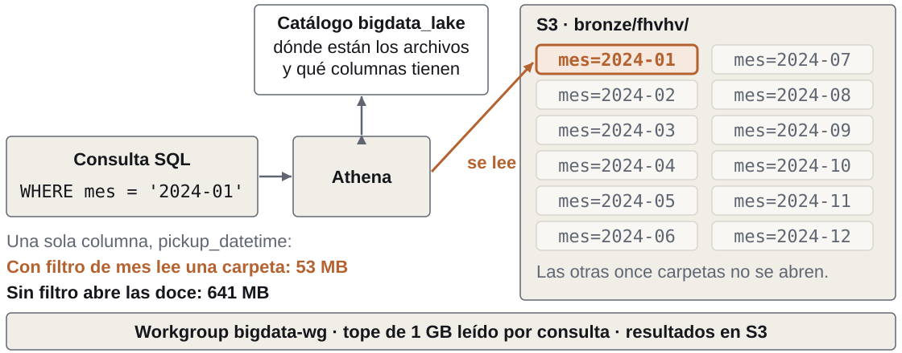
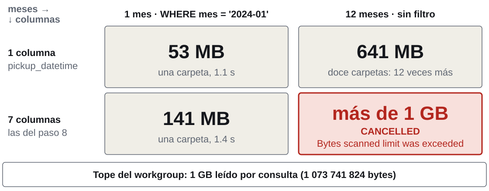
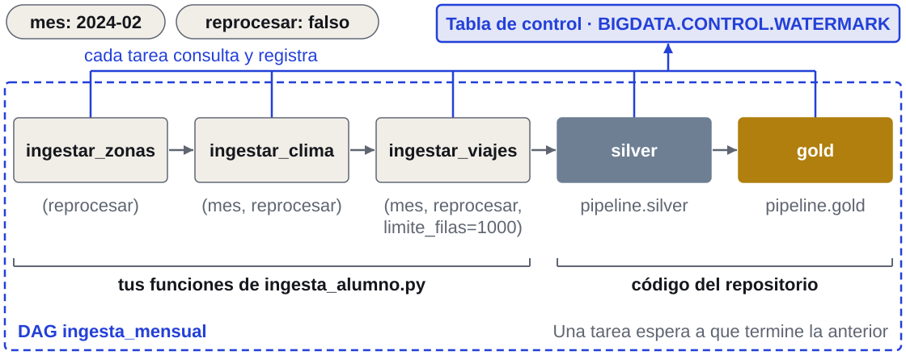
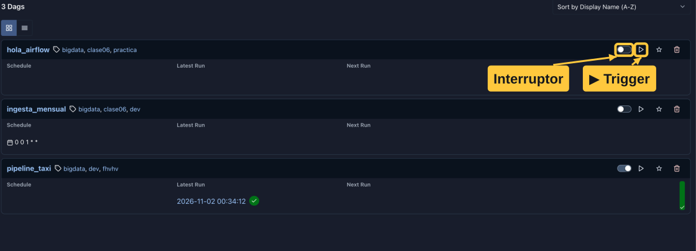
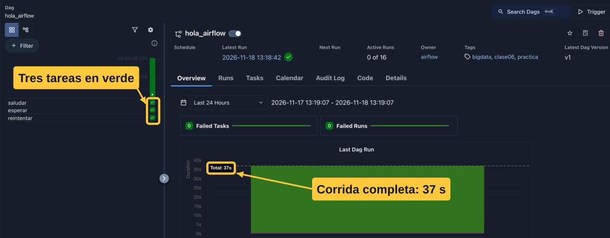
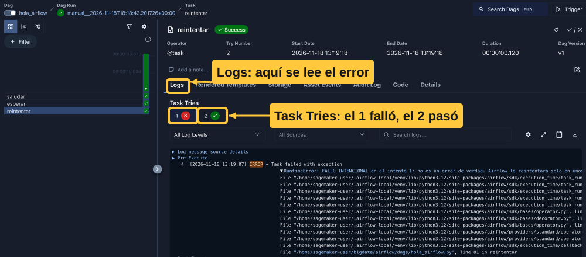
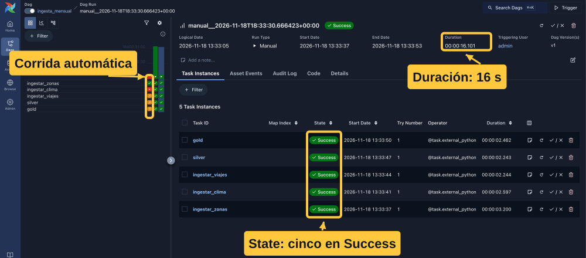
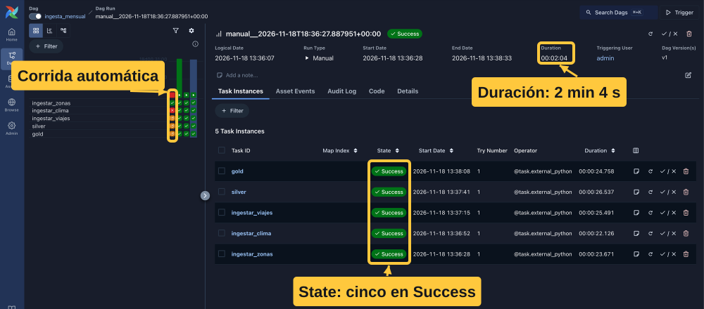
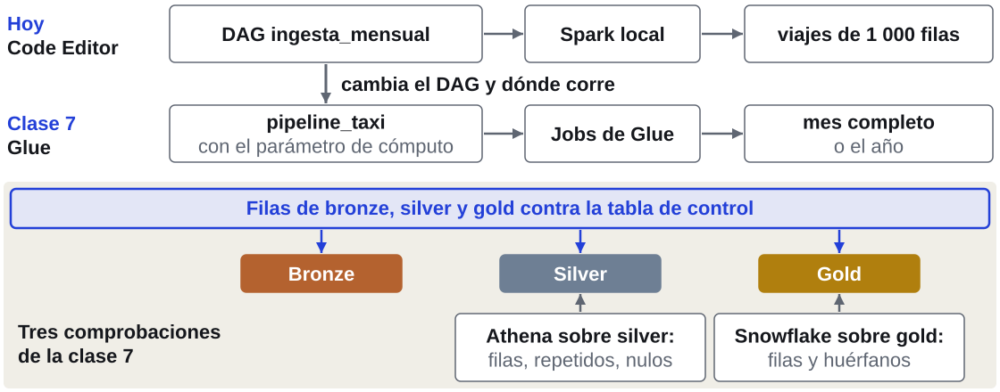

Big Data e Ingeniería de Datos
Clase 6 · Mirar el lake con Athena y automatizar la ingesta con Airflow
Posgrado UdeM · 18 nov 2026
Antes de la clase, cada persona dejó abierto el Code Editor con una terminal. Si el Space se apagó (se apaga solo tras 60 minutos sin uso), se enciende con Run space. La clase tiene cuatro partes: mirar con Athena lo que trae la fuente; construir silver y gold en un lab; automatizar con Airflow; y arrancar el Taller 2. El trabajo es individual y la única ayuda es el instructor; el Taller 2 se hace en equipos. Tiempo: 1 min. Siguiente: la pregunta de la clase.
¿Cómo se ejecuta todo el pipeline solo, cada mes, en orden y sin duplicar al reintentar?
Caso del curso: ¿la lluvia cambia los viajes en NYC?
Problema: en la clase anterior cada persona escribió una función que trae un mes de una fuente a su bronze. Pero un pipeline real no se ejecuta con un notebook y a mano: se ejecuta cada mes, con cinco pasos en un orden fijo, y a veces una tarea falla a la mitad y se repite. Si esa repetición duplica filas, cualquier suma queda inflada sin que nadie reciba un error. El año completo tiene 239.5 M de viajes (fuente: `restricciones_curso.md`) y enero, 19 663 930 en un solo archivo (`clase05_medidas.md`); duplicar un mes es duplicar cerca de 20 M de filas. Pide a dos personas que digan qué puede salir mal en esa ejecución mensual y anota las respuestas en una hoja visible: la clase las contesta una por una (orden, olvido, repetición, memoria). Conversación de 2 min. Tiempo: 2 min. Siguiente: el mapa de lo que haremos hoy.
Hoy miras qué trae la fuente, construyes silver y gold, y Airflow ejecuta todo en orden

La tabla de control evita que una repetición duplique datos.
Problema: hoy mezclamos varias herramientas (Athena, un lab, Airflow, un taller) y sin un mapa cada una parece suelta. Este diagrama las coloca sobre una sola línea de izquierda a derecha, la del pipeline. Cada fuente entra a su tarea de ingesta (ingestar_viajes, ingestar_zonas, ingestar_clima: tus funciones de la clase 5) y las tres escriben bronze. Athena no es un paso del pipeline: es una ventana para mirar lo que trae la fuente antes de limpiarlo: lee el bronze del año completo que está en S3, no lo que guardó tu ingesta en el disco (lo aclaramos en la slide 10); por eso va debajo, con una flecha de lectura. Después vienen silver (limpia) y gold (resume), que son el lab de hoy. El DAG termina en gold: no carga nada a Snowflake; en Snowflake solo consulta y registra en la tabla de control. Alrededor de las cinco tareas (tres de ingesta, silver y gold) hay un marco: es el DAG de Airflow, el programa que las ejecuta en orden, cada mes. Arriba está la tabla de control, BIGDATA.CONTROL.WATERMARK, con las dos flechas de la clase 5: «¿ya lo traje?» antes de trabajar y «lo traje» al terminar bien. El color cobre es solo de bronze, gris de silver y ocre de gold. En clase, la parte del DAG corre en tu Code Editor con un mes de prueba (viajes limitados a 1 000 filas); en la clase 7 el pipeline corre en Glue con pipeline_taxi. Tiempo: 3 min. Siguiente: un repaso de las tres capas para que nadie dependa de la clase pasada.
El lake tiene tres capas: bronze guarda, silver limpia y gold resume
– Guarda cada fuente tal como llegó.
– Convierte cada columna a su tipo de dato y descarta viajes imposibles.
– Resume por día, zona y empresa.
Esta slide hace la clase autocontenida: aunque alguien no recuerde la clase 5, aquí está lo necesario. Un lake es el almacenamiento de archivos del pipeline (en este curso, un bucket de S3) y se organiza en tres capas llamadas medallion. Bronze guarda cada fuente sin modificarla: los viajes de la TLC (el regulador de taxis de NYC) en Parquet, un formato que guarda por columnas; las zonas en un CSV; el clima de Open-Meteo en JSON. Cada ingesta crea una carpeta de lote nueva y nunca borra las anteriores (src/pipeline/bronze.py), con cinco columnas de metadatos, entre ellas una huella de la fila (_hash_fila). Silver aplica las reglas del código (src/pipeline/silver.py): distancia menor a 100 millas, duración entre 1 y 180 minutos y tarifa mayor que cero. Hoy no deduplica: quitar repetidos por la huella es el ejercicio 2 del lab (Celda 13, dropDuplicates(["_hash_fila"])). Gold agrega por día, zona y empresa, con promedios ponderados (src/pipeline/gold.py). Ejemplo real de lo que cambia: enero entra con 19 663 930 viajes y silver deja 19 650 023, es decir 13 907 descartados (`clase05_medidas.md`, corrida en Glue del 16 nov.). Tiempo: 2 min. Siguiente: la tabla de control, que decide si un mes se descarga.
La tabla de control anota cada mes ingestado y evita repetirlo
Una fila de BIGDATA.CONTROL.WATERMARK
Si es true, repite a propósito.
Problema: si la ingesta de enero se ejecuta dos veces, ¿cuántas copias de cada viaje quedan? Dos, y nada avisa. Idea de ingeniería: antes de trabajar, la función pregunta a una tabla si ese mes ya se trajo; al terminar bien, anota una fila. La tabla vive en Snowflake, en BIGDATA.CONTROL.WATERMARK, y la consulta con consultar_watermark(tabla, capa, mes) y la escribe con registrar_watermark(...) (src/pipeline/watermark.py; usa el rol ACCOUNTADMIN y el warehouse COMPUTE_WH). Regla: si el mes ya está registrado y reprocesar es falso, la función no hace nada; con reprocesar verdadero repite a propósito, crea un lote nuevo y no borra la historia. La fila de ejemplo es de viajes de enero, con las 19 663 930 filas medidas (`clase05_medidas.md`); la columna FUENTE guarda la URL real y las zonas, que no tienen mes, usan el mes «sin_mes». Qué no resuelve: la tabla no dice si los datos están bien, solo si se trajeron; eso es lo que Athena y silver revisan hoy. Tiempo: 3 min. Siguiente: dejar el entorno al día.
Primero traes al Code Editor la versión de hoy del repositorio
# Haz clic en Terminal > New Terminal (menú de arriba): se abre una terminal.
# La terminal es una ventana de texto donde escribes comandos. Escribe este
# y presiona Enter; trae los archivos nuevos del curso a tu carpeta bigdata.
cd ~/bigdata && git pull
Debes ver «Already up to date.» o una lista de archivos que cambiaron. Si dice «Your local changes would be overwritten», copia tu trabajo fuera de ~/bigdata y repite el comando.
NOTEBOOK Code Editor · terminal
Problema: el código de hoy (tablas de Athena, el DAG ingesta_mensual y el lab) llegó al repositorio después de la última clase, y sin traerlo no hay nada que ejecutar. Dónde: en el Code Editor, menú de arriba Terminal > New Terminal; se abre una terminal en la parte de abajo. Explica con palabras simples qué es: una ventana donde se escriben comandos y se presiona Enter. Entrada: `cd ~/bigdata && git pull`. `cd ~/bigdata` entra a la carpeta del repositorio; `git pull` trae los cambios nuevos desde GitHub. Salida esperada: «Already up to date.» si ya lo tenían, o una lista de archivos cambiados. Errores comunes: «Your local changes would be overwritten» (editaste archivos dentro del repositorio: guarda tu trabajo en una copia fuera de ~/bigdata y repite git pull) y «No such file or directory» (la carpeta bigdata no está en tu inicio: avisa al instructor). Tiempo: 1 min. Siguiente: comprobar la versión de Python.
Después compruebas que el Python del curso sea el 3.12
# En la misma terminal, mira qué versión de Python usa el curso.
# Python es el lenguaje de tus notebooks; el curso necesita la versión 3.12.
cd ~/bigdata && .venv/bin/python --version
Debes ver «Python 3.12.x». Si es así, el entorno sirve: salta la slide siguiente y pasa a la primera consulta. Si ves otra versión, la slide siguiente repara el entorno.
NOTEBOOK Code Editor · terminal
Problema: el Code Editor usa Python 3.13 por defecto y el del curso es el 3.12; con otra versión fallan los notebooks y Airflow. Entrada: `cd ~/bigdata && .venv/bin/python --version` imprime la versión del Python del entorno del curso (.venv). Salida esperada: «Python 3.12.x»; si ya dice 3.12, no hace falta reparar y se ahorran los minutos más lentos de la apertura. Si dice otra versión, se sigue con la slide siguiente. Error común: «No such file or directory: .venv/bin/python» (no existe el entorno: se ejecuta la reparación de la slide siguiente). Tiempo: 1 min. Siguiente: reparar el entorno, solo para quien no tiene 3.12.
Solo si no dice 3.12, reparas el entorno con make reparar-entorno
# Solo si la versión no fue 3.12. Primero mira qué hará make, sin ejecutarlo.
cd ~/bigdata && make -n reparar-entorno
# Verás una línea: bash scripts/reparar-entorno.sh. Es la receta del comando.
# Ahora sí: crea de nuevo el entorno con Python 3.12 (tarda unos minutos).
cd ~/bigdata && make reparar-entorno
Al final debes ver «Entorno reparado: Python 3.12…». Después elige otra vez el kernel Python (bigdata): es el motor que ejecuta tu notebook.
NOTEBOOK Code Editor · terminal
Solo para quien no tiene Python 3.12. Entrada: `cd ~/bigdata && make -n reparar-entorno` imprime la receta del target (`bash scripts/reparar-entorno.sh`, del Makefile) sin ejecutarla, para que vean que make solo da un nombre corto a un comando; `cd ~/bigdata && make reparar-entorno` rehace .venv con Python 3.12, reinstala dependencias, registra el kernel y repara snow, la línea de comandos de Snowflake. Salida esperada: «Entorno reparado: Python 3.12…». La duración de la reparación no se midió en el ensayo. Después hay que elegir otra vez el kernel Python (bigdata) en cada notebook (se muestra en el lab). Errores comunes: «No rule to make target» (no estás en ~/bigdata; el `cd` del comando lo resuelve). Tiempo: 2 min. Siguiente: la primera pregunta de verdad: ¿qué trae bronze?
La tabla de control dice que el mes llegó, no qué trae dentro
– Enero registró 19 663 930 filas.
– Si esas filas traen nulos, viajes imposibles, repetidos o fechas de otro mes.
Problema antes que herramienta: la ingesta termina con un número de filas, pero ese número no dice si los datos sirven. Si silver limpia sin que sepas qué limpia, no puedes defender sus reglas ni detectar que una fuente cambió. Idea de ingeniería: medir el bronze antes de escribir la limpieza. Y se mide con lo que uno encuentra, no con lo que uno supone: lo que sigue es un hallazgo, no una lista de defectos prometidos. El dato crudo de enero está más limpio de lo que se creería en unas cosas (no hay filas idénticas ni recogidas fuera del mes) y no en otras (hay viajes imposibles y dos columnas vacías casi siempre de una empresa). Para consultar con SQL archivos que están en el lake, sin cargarlos antes a un almacén, se usa Athena, y lo que mira es lo que trae la fuente: los archivos originales de la TLC, los mismos que trae tu ingesta. Diferencia con Snowflake: allá los datos se cargan y viven dentro del almacén; aquí se quedan en S3 y la consulta los lee en el sitio. Tiempo: 1 min. Siguiente: qué datos lee Athena hoy y dónde están.
Hoy Athena lee el bronze del año en S3; tus funciones escriben en el disco del Code Editor
![Tres carriles de izquierda a derecha, con un rótulo común a la izquierda: los mismos archivos de la TLC y Open-Meteo. Clase 4: make muestra, un job de Glue, descargó el año a S3 bronze, 239 470 448 viajes, y hoy lo lee Athena. Hoy: tus funciones y el DAG, en el Code Editor, escriben en el disco bronze_alumno con 1 000 viajes, silver con 1 000 filas y gold con 281; una flecha punteada va a la tabla de control de Snowflake, y un rótulo dice que ese disco no llega a S3. Clase 7, en línea punteada: tus funciones en Glue escriben bronze, silver y gold del mes completo en S3, y Athena lee tu bronze y lo concilia con la tabla de control.](diagramas/Dc6-12.svg)
En la clase 7 tus funciones corren en Glue y escriben en S3.
Problema: casi todo el grupo va a pensar que Athena muestra lo que trajo su propia ingesta de la clase 5. No es así, y conviene aclararlo antes de la primera consulta. Qué lee Athena hoy: el bronze del año completo, 239 470 448 viajes, que está en el bucket de S3 de cada estudiante (bigdata-lake-<CUENTA>-us-east-2/bronze/). Lo dejó ahí `make muestra` (Paso 12 de la guía) en la clase 4: un job de Glue descargó los 12 meses de 2024 más las zonas y el clima. Son los mismos archivos originales de la TLC y de Open-Meteo que trae tu ingesta, no una copia distinta. Dónde escribe tu ingesta hoy: en el disco del Code Editor, no en S3. Tus funciones (ingestar_zonas, ingestar_clima, ingestar_viajes) y el DAG ingesta_mensual escriben en `~/datos_clase05/bronze_alumno` (zonas y clima completos; viajes, solo 1 000 filas en modo de prueba), después silver en `silver_alumno` (1 000 filas) y gold en `gold_alumno` (281 filas); el lab escribe en `~/datos_clase06/lake_lab`. Nada de eso llega a S3, y Athena no puede leer el disco del Code Editor. Lo único que sale del Code Editor son los registros de la tabla de control en Snowflake (BIGDATA.CONTROL.WATERMARK), que el código consulta y registra. Frase para decir en voz alta: «Tu ingesta trae estos mismos archivos; aquí los miramos completos porque en tu Code Editor solo guardaste 1 000 viajes.» Por qué local hoy: en el Code Editor (7.6 GB) con Airflow encendido quedan unos 700 MB libres, y el objetivo de hoy es orquestar (orden, reintentos, no duplicar), no mover volumen. Qué cambia en la clase 7: el mismo pipeline corre en Glue, tus funciones reciben base_bronze=s3://<tu bucket>/bronze en lugar de la carpeta local, escriben bronze, silver y gold en S3 con el mes completo, y entonces Athena lee TU propio bronze y se concilia con la tabla de control. Recorre el diagrama por carriles, de arriba abajo: la clase 4 (ya hecho), hoy (el carril con borde grueso) y la clase 7 (en línea punteada, todavía no existe). Tiempo: 2 min. Siguiente: qué es Athena y qué no.
Athena consulta con SQL los archivos del lake donde están, sin cargarlos a ningún almacén

Se paga por los bytes que la consulta lee, y este workgroup corta en 1 GB.
Qué es: Athena es un servicio de AWS que ejecuta SQL sobre archivos de S3. Tiene tres piezas que el diagrama separa. Los datos siguen en S3, en las carpetas mes=2024-01 a mes=2024-12 del bronze. El catálogo (en AWS se llama Glue Data Catalog; aquí, la base bigdata_lake) guarda para cada tabla dónde están sus archivos y qué columnas tienen: es solo la descripción, no los datos. El workgroup (bigdata-wg) fija dónde se guardan los resultados y un tope de 1 GB leído por consulta (infra/aws/modules/lake/main.tf: `bytes_scanned_cutoff_per_query`; CONTRATO.md). Cobro: Athena cobra por los bytes que lee, por eso el diagrama resalta que solo se leen las carpetas que el filtro pide; no citamos precios. Qué resuelve: mirar y diagnosticar archivos sin cargarlos. Qué no resuelve: no es un almacén para uso diario ni sustituye a Snowflake; no mantiene los datos, no tiene índices y cada consulta paga la lectura. En la clase 7 se usa para conciliar capas. Tiempo: 2 min. Siguiente: la tabla que describe el bronze.
Una tabla externa de Athena solo describe dónde están los archivos y qué columnas traen
-- Base bigdata_lake. Las cinco tablas: curso/clase06/athena/01_tablas.sql.
CREATE EXTERNAL TABLE bigdata_lake.bronze_fhvhv (
pickup_datetime timestamp, pulocationid int,
trip_miles double, trip_time bigint ...
)
PARTITIONED BY (mes string)
STORED AS PARQUET
LOCATION 's3://bigdata-lake-<CUENTA>-us-east-2/bronze/fhvhv/'
TBLPROPERTIES ('projection.enabled' = 'true',
'projection.mes.type' = 'date', 'projection.mes.format' = 'yyyy-MM',
'projection.mes.range' = '2024-01,2024-12' ...
);
Resumen para leer: el CREATE completo está en 01_tablas.sql.
NOTEBOOK athena/01_tablas.sql
Problema: para consultar archivos con SQL, Athena necesita saber qué columnas tienen y en qué carpeta están. Idea: una tabla externa («externa» porque Athena no es dueña de los datos: borrar la tabla no borra los archivos). PARTITIONED BY (mes string) hace que mes sea una columna más, que sale del nombre de la carpeta mes=AAAA-MM. Sin proyección habría que registrar cada carpeta con MSCK REPAIR TABLE; con `projection.enabled`, Athena calcula las rutas a partir de la regla (mes de 2024-01 a 2024-12, uno por mes). La slide muestra solo cuatro de las 24 columnas y tres de las propiedades; el archivo real (`01_tablas.sql`) declara las 24, además de `interval`, `interval.unit` y `storage.location.template`, y también las tablas bronze_clima, bronze_taxi_zones, silver_fhvhv_trips (dev/silver/fhvhv_trips/) y gold_daily_zone_metrics (dev/gold/daily_zone_metrics/). Las seis sentencias se ejecutaron en 245 a 359 ms y 0 bytes (`clase06_medidas.md`). Importante, medido en la cuenta de prueba: si el bucket se llenó con la versión nueva de make muestra (la del pipeline desde el 16 de noviembre, que corre en Glue el mismo código de bronze con lotes), los crudos están en bronze/_crudo/<fuente>/…, con los mismos archivos y los mismos bytes, y al lado hay carpetas lote=. Tus funciones del lab no escribieron en S3: escribieron en el disco del Code Editor. Si tu cuenta está así, las tres tablas de bronze deben apuntar a `_crudo`; apuntarlas a la carpeta con lote= repetiría filas y mezclaría esquemas. El formato anterior sin mover (bronze/<fuente>/mes=) sí se probó contra la copia pública: dio 19 663 930 filas de enero. Tiempo: 1 min. Siguiente: guardar tu número de cuenta para crear las tablas.
Guardas tu número de cuenta de AWS en la terminal
# En la terminal del Code Editor, guarda tu número de cuenta de AWS.
# Una variable guarda un valor mientras la terminal siga abierta.
cd ~/bigdata
CUENTA=$(aws sts get-caller-identity --query Account --output text)
# Escribe esto para ver qué quedó guardado:
echo $CUENTA
Debes ver un número de 12 dígitos: es tu cuenta. Si dice «Unable to locate credentials», esa terminal no tiene credenciales de AWS: pide ayuda al instructor.
NOTEBOOK Code Editor · terminal
Demo del instructor, para replicar sin ayuda. Problema: las tablas de Athena apuntan a TU bucket, y el nombre de ese bucket lleva tu número de cuenta de AWS; hay que guardarlo para no escribirlo a mano. Entrada: `cd ~/bigdata` entra al repositorio; `CUENTA=$(aws sts get-caller-identity --query Account --output text)` pregunta a AWS quién eres y guarda en la variable CUENTA tu número de 12 dígitos; `echo $CUENTA` lo muestra. Aclara que la variable solo existe en esa terminal: si abren otra, hay que repetirla. Salida esperada: 12 dígitos. Error común: «Unable to locate credentials» (terminal sin credenciales de AWS). Tiempo: 1 min. Siguiente: mirar dónde quedó tu bronze.
Miras en qué carpetas guardó tu ingesta el bronze: mes= o _crudo
# En la misma terminal, lista las carpetas de tu bronze en S3.
# S3 es el almacén de archivos de AWS; bronze/ guarda los datos crudos.
aws s3 ls s3://bigdata-lake-$CUENTA-us-east-2/bronze/
# Si ves fhvhv/, clima/ y taxi_zones/, no cambies nada.
# Si ves _crudo/, las rutas de las tablas deben incluir esa carpeta.
Si ves una carpeta _crudo, cambia /bronze/<fuente>/ por /bronze/_crudo/<fuente>/ en LOCATION y en storage.location.template antes de pegar las tablas.
NOTEBOOK Code Editor · terminal
Problema: según si ejecutaste la ingesta nueva, tus archivos de bronze están en carpetas `mes=` (formato anterior) o dentro de `_crudo/` (formato nuevo: la ingesta movió los crudos ahí, mismos archivos y mismos bytes). Las tablas deben apuntar al lugar correcto. Entrada: `aws s3 ls s3://bigdata-lake-$CUENTA-us-east-2/bronze/` lista las carpetas; usa la variable CUENTA de la slide anterior, así que debe ser la misma terminal. Salida esperada: `fhvhv/`, `clima/` y `taxi_zones/` con carpetas `mes=` (se probó contra la copia pública: dio 19 663 930 filas de enero), o una carpeta `_crudo/`. En una cuenta con el bronze en formato nuevo, las tablas apuntan a `bronze/_crudo/`. Errores comunes: lista vacía o «NoSuchBucket» (CUENTA vacía o región equivocada). Tiempo: 1 min. Siguiente: crear tu copia de 01_tablas.sql.
Creas tu copia de 01_tablas.sql con tu número de cuenta
# En la misma terminal, copia el archivo cambiando <CUENTA> por tu número.
cd ~/bigdata
sed "s/<CUENTA>/$CUENTA/g" \
curso/clase06/athena/01_tablas.sql > ~/01_tablas_mio.sql
# sed reemplaza el texto <CUENTA>; la copia queda en tu carpeta de inicio.
# La barra \ al final de una línea significa que el comando sigue abajo.
No sale ningún mensaje: es normal. Después, en el Code Editor, haz clic en File > Open File y abre ~/01_tablas_mio.sql: de ahí copiarás cada sentencia.
NOTEBOOK Code Editor · terminal
Problema: 01_tablas.sql trae el marcador <CUENTA> en lugar de tu número; si se pega así, las tablas apuntan a un bucket que no existe y salen con 0 filas. Entrada: `sed "s/<CUENTA>/$CUENTA/g" curso/clase06/athena/01_tablas.sql > ~/01_tablas_mio.sql` reemplaza el marcador en todo el archivo y guarda una copia tuya en ~/01_tablas_mio.sql; la barra invertida continúa el comando en la línea siguiente. Salida esperada: ninguna; para comprobarlo se abre el archivo y se busca que no quede ningún <CUENTA>. Dos cosas que la consola no acepta y que ya están corregidas en `01_tablas.sql`: comentarios `--` dentro de un CREATE y un tipo struct partido en varias líneas; si alguien pega una copia vieja del archivo, falla por eso. Error común: tablas con 0 filas (marcador sin reemplazar o ruta de bronze equivocada). Tiempo: 1 min. Siguiente: preparar el editor de Athena.
Eliges región, workgroup y base antes de pegar nada
Arriba a la derecha, elige la región US East (Ohio), us-east-2.
Busca Athena y abre Query editor; en Workgroup elige bigdata-wg.
A la izquierda, en Database, elige bigdata_lake.
NOTEBOOK Consola AWS · Athena
Dónde: la consola de AWS en el navegador. Paso 1: la región va arriba a la derecha; debe decir US East (Ohio), us-east-2; en otra región, Athena no encuentra el workgroup. Paso 2: en el buscador de la consola escribe Athena, abre Query editor y elige el workgroup bigdata-wg (el selector Workgroup está en el editor); ese workgroup guarda los resultados y fija el límite de 1 GB por consulta. Paso 3: en el panel izquierdo, Data source AwsDataCatalog y Database bigdata_lake. Debes ver bigdata-wg y bigdata_lake elegidos antes de escribir. Todas las consultas siguientes escriben la base completa (bigdata_lake.tabla) para no depender del selector. Error común: «Workgroup not found» (región equivocada). En el ensayo del 18 nov. todo se ejecutó en la consola de Athena desde el Code Editor. Tiempo: 1 min. Siguiente: pegar y ejecutar cada sentencia.
Pegas y ejecutas una sentencia a la vez, y al final compruebas las cinco tablas
-- En Athena, pega UN bloque de ~/01_tablas_mio.sql, de CREATE hasta ;
-- Haz clic en el botón Run. Athena ejecuta una sola sentencia por vez.
-- Repite con cada bloque. Al final, pega y ejecuta esta última sentencia:
SHOW TABLES IN bigdata_lake;
-- Debes ver cinco tablas: bronze_fhvhv, bronze_clima, bronze_taxi_zones,
-- silver_fhvhv_trips y gold_daily_zone_metrics.
Una tabla externa solo describe dónde están los archivos: no los copia. Si una tabla sale con 0 filas, la ruta de bronze está mal o dejaste <CUENTA> sin cambiar.
NOTEBOOK Athena · bigdata-wg
Problema: Athena ejecuta una sentencia por vez; si pegas el archivo entero, falla. Qué hacer: abre ~/01_tablas_mio.sql en el Code Editor, copia el primer bloque (de CREATE hasta su punto y coma), pégalo en el editor de Athena y haz clic en Run; espera el aviso de que terminó con éxito y repite con el siguiente. Al final, `SHOW TABLES IN bigdata_lake;` debe mostrar bronze_fhvhv, bronze_clima, bronze_taxi_zones, silver_fhvhv_trips y gold_daily_zone_metrics. Si la consola dice que hay varias sentencias, falta separarlas. Errores comunes: tablas con 0 filas (ruta de bronze equivocada o marcador sin reemplazar) y «Workgroup not found» (región equivocada). Tiempo: 1 min. Siguiente: la primera consulta.
Primera consulta: las columnas clave de enero vienen completas; dos columnas de Lyft llegan incompletas
-- En el editor de Athena (bigdata-wg, bigdata_lake), pega esta consulta y
-- haz clic en Run. Cuenta los nulos solo en la partición de enero.
SELECT count(*) AS filas,
count_if(pickup_datetime IS NULL) AS n_pickup,
count_if(pulocationid IS NULL) AS n_zona_recogida,
count_if(base_passenger_fare IS NULL) AS n_tarifa,
count_if(originating_base_num IS NULL) AS n_base_origen,
count_if(on_scene_datetime IS NULL) AS n_llegada_al_sitio
FROM bigdata_lake.bronze_fhvhv WHERE mes = '2024-01';
-- Salida, una fila: filas 19663930, n_pickup 0, n_zona_recogida 0,
-- n_tarifa 0, n_base_origen 5218737, n_llegada_al_sitio 5218737.
Casi todos esos nulos son de Lyft: 5 218 737 de sus 5 231 175 viajes. Uber no tiene ninguno. Silver no usa esas dos columnas.
NOTEBOOK athena/02_explorar_bronze.sql
Problema: un nulo es un valor vacío, y una suma que ignora nulos da un resultado menor sin avisar. Dónde: Athena, workgroup bigdata-wg, base bigdata_lake. Entrada: count(*) cuenta las filas; count_if(condición) cuenta las que cumplen la condición; AS nombra cada columna; WHERE mes = '2024-01' es el filtro de partición que veremos en la slide 22. Aclaración si preguntan por qué salen 19 663 930 filas: Tu ingesta trae estos mismos archivos; aquí los miramos completos porque en tu Code Editor solo guardaste 1 000 viajes. Salida medida (`clase06_medidas.md`, paso 3, 17 nov.): 19 663 930 filas, 0 nulos en licencia, pickup, dropoff, zonas, millas, duración, tarifa y pago, y 5 218 737 nulos (26.5 %) en originating_base_num y on_scene_datetime, casi todos de Lyft (HV0005; Uber, HV0003, 0). La slide muestra 6 de las 12 columnas que mide `02_explorar_bronze.sql`; la consulta completa leyó 345 333 249 bytes (329 MB) en 1 826 ms. Cuéntalo como hallazgo: no era un error de la ingesta, es una propiedad de la fuente. El dato crudo está más limpio de lo que se creería en las columnas clave, y por eso se mide antes de limpiar. Errores comunes: «COLUMN_NOT_FOUND» por mayúsculas (Athena pasa los nombres a minúsculas). Tiempo: 3 min. Siguiente: viajes que no pueden ser reales.
Segunda consulta: 13 907 viajes de enero, el 0.07 %, incumplen alguna regla de silver
-- Umbrales de silver: 0 < millas < 100, de 1 a 180 minutos, tarifa > 0.
SELECT count(*) AS filas,
count_if(trip_miles <= 0) AS millas_cero_o_negativas,
count_if(trip_miles >= 100) AS millas_100_o_mas,
count_if(trip_time < 60) AS menos_de_1_min,
count_if(trip_time > 180 * 60) AS mas_de_3_horas,
count_if(base_passenger_fare < 0) AS tarifa_negativa,
count_if(base_passenger_fare = 0) AS tarifa_cero
FROM bigdata_lake.bronze_fhvhv WHERE mes = '2024-01';
-- Salida: 19663930, 3286, 1660, 1640, 791, 191 y 7143.
-- Una fila puede incumplir varias reglas: en total son 13907.
13 907 no es la suma de las columnas. 19 663 930 − 13 907 = 19 650 023, exactamente las filas de silver en enero.
NOTEBOOK athena/02_explorar_bronze.sql
Problema: un viaje puede venir con cientos de millas o con duración casi cero; son errores de captura que distorsionarían los promedios de gold. Entrada: los umbrales de src/pipeline/silver.py (DISTANCIA_MAX_MI = 100, DURACION_MIN_MIN = 1, DURACION_MAX_MIN = 180); trip_time viene en segundos, así que 1 minuto son 60 y 180 minutos son 10 800 (180 * 60). Salida medida (paso 4, 17 nov.): 3 286 con millas <= 0; 1 660 con 100 millas o más; 1 640 de menos de 1 minuto; 791 de más de 3 horas; 191 con tarifa negativa; 7 143 con tarifa 0. La consulta completa del archivo agrega destino anterior al origen (2), pago negativo (137) y la columna incumple_alguna_regla_de_silver: 13 907 filas, 0.07 %. Leyó 249 460 975 bytes (238 MB) en 1 433 ms. Los extremos (paso 4B): 417.62 millas, 14.46 horas, tarifa mínima -43.09. Cierre aritmético que el público puede verificar: 19 663 930 − 13 907 = 19 650 023, que es el número de filas de silver en enero (paso 9: 0 bytes; en la consola del Code Editor, 19 650 023 filas en 0.6 s). Lo que viste con SQL es lo que el lab hace con Spark. Tiempo: 3 min. Siguiente: viajes repetidos.
Tercera consulta: enero no tiene filas idénticas, pero 38 pares de viajes comparten empresa, hora y zonas
-- Huella de negocio: empresa, recogida, bajada y las dos zonas.
SELECT count(*) AS grupos_repetidos,
COALESCE(sum(c - 1), 0) AS filas_sobrantes
FROM (
SELECT count(*) AS c
FROM bigdata_lake.bronze_fhvhv
WHERE mes = '2024-01'
GROUP BY hvfhs_license_num, pickup_datetime, dropoff_datetime,
pulocationid, dolocationid
HAVING count(*) > 1);
-- Salida: grupos_repetidos 38, filas_sobrantes 38. Con las 24 columnas: 0.
Los 38 pares difieren en algo, como el precio: son viajes distintos. El ejercicio 2 deduplica por toda la fila, no por una huella parcial.
NOTEBOOK athena/02_explorar_bronze.sql
Problema: si una fuente trae el mismo viaje dos veces, o una ingesta se repitió, cada suma de gold lo cuenta dos veces y no hay error. Idea: dos filas son «la misma» si coinciden en las columnas que identifican un viaje; agrupar por esas columnas y quedarse con los grupos de más de una fila (HAVING count(*) > 1) las encuentra. COALESCE(…, 0) evita un NULL cuando no hay grupos. Salida medida (paso 5B, 17 nov.): 38 grupos de 2 filas (38 pares de viajes) y 38 filas sobrantes, con la huella de negocio de cinco columnas (151 MB leídos, 2 213 ms). Con nueve columnas (agrega millas, pago, tarifa y propina) quedan 2 grupos. Paso 5A, el duplicado exacto con las 24 columnas: 0 grupos, 0 filas sobrantes (472 684 581 bytes, 451 MB, 8 580 ms). Lectura correcta: en enero no hay duplicados exactos; las 38 coincidencias son viajes distintos que comparten empresa, hora y zonas. Por eso el ejercicio 2 del lab deduplica por la huella de toda la fila (dropDuplicates(["_hash_fila"]), Celda 13); el silver del repositorio hoy no deduplica; en enero da igual: 0 filas idénticas. Con una huella parcial se perderían viajes reales. El duplicado exacto aparece cuando una ingesta se repite, y para eso existe la tabla de control. Es el hallazgo central de la demo: el dato crudo no trae la basura que se esperaba. El GROUP BY es una operación ancha: Athena reparte filas por clave entre nodos. Tiempo: 3 min. Siguiente: fechas fuera del mes.
Cuarta consulta: ninguna recogida de enero cae fuera de enero, y 6 584 viajes terminan en febrero
-- La carpeta dice enero; ¿qué dicen las fechas dentro del archivo?
SELECT count_if(pickup_datetime < TIMESTAMP '2024-01-01 00:00:00'
OR pickup_datetime >= TIMESTAMP '2024-02-01 00:00:00')
AS recogida_fuera,
count_if(dropoff_datetime >= TIMESTAMP '2024-02-01 00:00:00')
AS bajada_en_febrero,
count_if(request_datetime < TIMESTAMP '2024-01-01 00:00:00')
AS pedido_en_diciembre
FROM bigdata_lake.bronze_fhvhv WHERE mes = '2024-01';
-- Salida: recogida_fuera 0, bajada_en_febrero 6584, pedido_en_diciembre 858.
Silver filtra por la fecha de recogida, no por la de bajada: un viaje que termina en febrero sigue siendo de enero.
NOTEBOOK athena/02_explorar_bronze.sql
Problema: la carpeta mes=2024-01 afirma que sus viajes son de enero, pero esa afirmación la hizo quien nombró la carpeta, no los datos. Entrada: tres condiciones contra el rango [1 de enero, 1 de febrero). Salida medida (paso 6A, 17 nov.): 0 recogidas fuera de enero (primer viaje 2024-01-01 00:00:00, último 2024-01-31 23:59:59); 6 584 viajes que terminan en febrero (empezaron antes de la medianoche del 31; la última bajada es 2024-02-01 02:10:41); 858 pedidos hechos en diciembre (pedido el 31, recogida el 1 de enero). 169 202 942 bytes (161 MB), 1 769 ms. Aclara que «fuera del mes» no siempre es un error: son viajes legítimos que cruzan la medianoche. Además, la comparación entre la carpeta y la fecha de recogida en los doce archivos (paso 6B, 641 MB, 2 182 ms) devuelve 0 filas: ningún archivo trae recogidas de otro mes. Cierra el bloque con las cuatro conclusiones, dichas como hallazgo: el dato crudo está más limpio de lo que creías en unas cosas (no hay filas idénticas ni recogidas fuera del mes, y las columnas clave no tienen nulos) y no en otras (13 907 viajes imposibles, 38 coincidencias por huella de negocio y 5.2 millones de nulos en dos columnas de Lyft). Por eso se mide antes de limpiar. Tiempo: 2 min. Siguiente: el costo de consultar el año.
Dos palancas gastan menos, meses y columnas; sin ninguna, Athena corta la consulta en 1 GB

El conteo por mes lee 0 bytes: lo guarda el pie del Parquet.
NOTEBOOK athena/02_explorar_bronze.sql
Idea: dos palancas bajan los bytes que lee Athena, filtrar por mes y pedir pocas columnas, y sin ninguna la consulta no termina. Problema: hasta ahora todas las consultas tenían WHERE mes = '2024-01'; sin ese filtro Athena abre las doce carpetas. El workgroup bigdata-wg corta cada consulta al pasar 1 GB (`bytes_scanned_cutoff_per_query` = 1 073 741 824 bytes, infra/aws/modules/lake/main.tf). Athena cobra por byte leído; si preguntan por el costo, la tarifa se consulta en la página oficial de AWS, no se cita aquí. Fila de una columna (pickup_datetime, paso 2; bytes del 17 nov., tiempos en la consola del Code Editor del 18 nov.): un mes, 56 002 135 bytes (53.41 MB), 1.1 s; doce meses sin filtro, 671 711 446 bytes (640.59 MB), 2.2 s. Son 12 veces más bytes para la misma pregunta: la tabla está particionada por mes y, con el filtro, Athena descarta las otras once carpetas sin abrirlas (poda de particiones, partition pruning); el paso 2C (`"$path"`) muestra que la consulta A leyó un solo archivo (0.4 s). Fila de siete columnas (paso 8 de `02_explorar_bronze.sql`: licencia, conteo, suma de pago, propinas y tarifa, y promedios de millas y minutos): la 8A, con WHERE mes = '2024-01', devolvió 2 filas (HV0003 Uber 14 432 755 viajes y HV0005 Lyft 5 231 175) y leyó 147 803 040 bytes (141 MB) en 1 373 ms; la 8B, la misma consulta sin filtro, quedó en estado CANCELLED con el motivo «Bytes scanned limit was exceeded», Data scanned = 1 073 741 824 bytes, sin devolver filas (2 351 ms). Ejecuta en vivo 2A, 2B, 8A y 8B en ese orden. En el ensayo del 18 nov., la 8B también se ejecutó en la consola de Athena del Code Editor y falló con ese mismo mensaje; los bytes y el tiempo de la 8B son de la prueba por CLI, y la consola no mostró una cifra nueva para la 8A. Pedir pocas columnas funciona porque Parquet guarda por columnas. Un conteo por mes del año completo (paso 1) lee 0 bytes (1.6 s en la consola): Parquet guarda el número de filas en el pie del archivo; las filas por mes son 19 663 930; 19 359 148; 21 280 788; 19 733 038; 20 704 538; 20 123 226; 19 182 934; 19 128 392; 19 209 788; 20 028 282; 19 987 533 y 21 068 851, que suman 239 470 448. El tope protege el presupuesto de la cuenta de una consulta descuidada; no es un problema de dinero sino de hábito. Tiempo: 3 min. Siguiente: ahora lo haces tú.
Ahora continuamos con el reto de Athena: marzo, el mes más grande del año
– Cinco consultas con huecos en 03_reto.sql.
– Sabrás cuántos viajes imposibles trae marzo y cuánto cuesta no filtrar.
NOTEBOOK athena/03_reto.sql
Transición al reto, en voz alta: ahora continuamos con el reto de Athena. Vas a ver cinco consultas con huecos (`-- TU CÓDIGO AQUÍ`) en curso/clase06/athena/03_reto.sql, que ya está en tu repositorio después del git pull. Marzo es el mes más grande del año: 21 280 788 viajes. Al terminar sabrás cuántos viajes imposibles y repetidos trae marzo y cuántos bytes cuesta no filtrar por mes. Cada ejercicio trae su resultado esperado en un comentario, para que sepas al instante si está bien. El trabajo es individual y la única ayuda es el instructor. Tiempo: 1 min. Siguiente: los pasos del reto.
Abres 03_reto.sql y buscas los huecos
Haz clic en File > Open File y abre curso/clase06/athena/03_reto.sql.
Cada ejercicio trae un hueco marcado -- TU CÓDIGO AQUÍ.
Debajo, RESULTADO ESPERADO dice qué debe salir.
NOTEBOOK athena/03_reto.sql
Versión de estudiante de la demo. Dónde: en el Code Editor, menú File > Open File, y la ruta curso/clase06/athena/03_reto.sql (el archivo ya está en el repositorio después del git pull). Qué ver: son cinco ejercicios; cada uno trae una consulta con un hueco marcado `-- TU CÓDIGO AQUÍ` y, en comentarios, el RESULTADO ESPERADO con las filas y los bytes que debe leer. El filtro de marzo ya viene escrito en cada consulta, salvo en la 5A, donde es el hueco. Tiempo: 1 min. Siguiente: cómo ejecutar cada ejercicio en Athena.
Completas, ejecutas y comparas con el resultado esperado
Pega un ejercicio en Athena y completa el hueco.
Haz clic en Run y compara con RESULTADO ESPERADO.
Abajo, en Query stats, mira Data scanned: los bytes leídos.
NOTEBOOK athena/03_reto.sql
Dónde: el editor de Athena con workgroup bigdata-wg y base bigdata_lake (la misma preparación de la slide 16). Un ejercicio a la vez: copia la consulta, escribe tu código en el hueco, haz clic en Run y compara las filas con RESULTADO ESPERADO. Debajo de los resultados, en Query stats, está Data scanned: los bytes que leyó la consulta; debe ser igual o muy cercano al esperado. Si tu resultado no coincide, antes de pedir ayuda revisa el filtro de mes, las unidades (trip_time en segundos, trip_miles en millas) y los operadores (<= frente a <). Tiempo: 1 min. Siguiente: qué ejercicios haces hoy.
Hoy haces los ejercicios 1, 2 y 5
Ejercicio 1: completa nombre y porcentaje.
Ejercicio 2: completa cada conteo de imposibles.
Ejercicio 5A: escribe el filtro de marzo.
Compara bytes de 5A y 5B; el 3 y el 4, en casa.
NOTEBOOK athena/03_reto.sql
13 min de trabajo individual en total (2 de explicación y 11 de trabajo) con el workgroup bigdata-wg. Lo que se completa son columnas calculadas, subconsultas, la unión con CAST y una ventana. En clase se hacen los ejercicios 1, 2 y 5; el 3 y el 4 (repetidos y las cinco zonas con su nombre, con el JOIN y el CAST) quedan para casa. Resultados esperados medidos (`clase06_medidas.md`; solución en `validacion/contenido/clase06_athena_solucion.sql`, solo instructor). Ej. 1, empresa y porcentaje: HV0003 Uber 15 621 998 (73.4 %) y HV0005 Lyft 5 658 790 (26.6 %); 2 599 945 bytes (2.5 MB). Ej. 2, imposibles: 21 280 788 filas; millas 4 358; duración 2 098; tarifa 1 183; total 7 069 (0.033 %), que no es la suma; 112 124 969 bytes (107 MB). Ej. 3, para casa: 33 grupos y 33 filas sobrantes; 167 847 657 bytes (160 MB). Ej. 4, para casa: LaGuardia Airport 388 326; JFK Airport 371 026; East Village 297 394; Crown Heights North 290 327; Times Sq/Theatre District 259 277; 23 254 176 bytes (22 MB). Ej. 5, el costo de no filtrar: 5A, 23 241 845 bytes (22 MB); 5B sin filtro, 261 409 931 bytes (249 MB), unas 11 veces más y todavía bajo 1 GB porque lee una sola columna de 24. Las consultas de la solución se corrieron dos veces con los mismos resultados y bytes. Errores comunes: dejar 2024-01 (resultado distinto), unidades y olvidar el filtro en 5A. Cierra a los 13 min con una pregunta a mano alzada: ¿cuántas veces más bytes leyó 5B? Tiempo: 11 min en esta slide (protegidos). Siguiente: con ese diagnóstico, silver y gold.
Ahora continuamos con el lab: construyes silver y gold
– Cinco ejercicios: limpiar, quitar repetidos, unir zonas, agregar gold y registrar.
– Silver y gold quedan escritos y anotados en la tabla de control.
Transición, en voz alta: ahora continuamos con el notebook lab_silver_gold. Vas a ver cinco ejercicios que corresponden a lo que Athena mostró: el 1 convierte cada columna a su tipo de dato y descarta los viajes imposibles (slide 19); el 2 quita repetidos con la huella (slide 20); el 3 une las zonas con broadcast, que copia la tabla pequeña a cada ejecutor para no mover viajes; el 4 agrega gold por día, zona y empresa con promedios ponderados; y el 5, `procesar_capa`, envuelve silver y gold con la tabla de control. Al terminar, tu cadena sobre una muestra del 1 % de enero produce el mismo gold que el del repositorio, y cada capa queda anotada en la tabla de control. Cada ejercicio responde OK, PENDIENTE o REVISAR. Aviso: al terminar, ejecuta la Celda 26, que apaga Spark; antes del descanso haz además Kernel > Shut Down para liberar la memoria. Tiempo: 2 min. Siguiente: el ejercicio 5.
El ejercicio 5 envuelve silver y gold: consulta la tabla de control, procesa y solo al final registra
def procesar_capa(capa, tabla, mes, fuente, calcular, reprocesar=False):
registros = json.loads(consultar_watermark(tabla, capa, mes))
if len(registros) > 0 and not reprocesar:
return False # ya está registrado: no se hace nada
inicio = datetime.now(timezone.utc).replace(microsecond=0)
filas = calcular() # si falla, el error sube y no se registra
registrar_watermark(fuente, capa, tabla, mes, filas, inicio, reprocesar)
return True
Es la Celda 20, resumida. Las tablas de práctica del lab empiezan con «prueba_lab_», y la Celda 25 ejecuta la cadena tres veces.
Problema: la tabla de control evitó que la ingesta repitiera un mes; ahora silver y gold necesitan lo mismo, y la conciliación de la clase 7 compara las filas de cada capa con lo anotado. Idea: el registro va al final y solo si todo salió bien, así «anotado» significa «terminó». Entrada: `procesar_capa(capa, tabla, mes, fuente, calcular, reprocesar)` consulta la tabla (consultar_watermark devuelve un texto JSON con la lista de registros); si hay alguno y reprocesar es falso, devuelve False sin hacer nada; si no, mide el inicio, ejecuta `calcular()` (una función sin argumentos que escribe la capa y devuelve cuántas filas quedaron) y registra con registrar_watermark(fuente, capa, tabla, mes, filas, inicio, reprocesar). El módulo `src/pipeline/watermark.py` fija rol ACCOUNTADMIN, warehouse COMPUTE_WH y la tabla BIGDATA.CONTROL.WATERMARK. La Celda 21 verifica el ejercicio (OK, PENDIENTE o REVISAR) y la Celda 25 corre silver y gold sobre tu cadena tres veces: primera ejecución, segunda con el mismo mes (no hace nada) y reproceso pedido; imprime los registros de cada tabla (`prueba_lab_fhvhv_trips` y `prueba_lab_daily_zone_metrics`, mes 2024-01). La Celda 10 comprueba antes que la conexión a Snowflake funcione. Error común: «No se encontró la tabla BIGDATA.CONTROL.WATERMARK»: falta `make snowflake` de la clase 5; el mensaje del módulo dice cómo arreglarlo. Tiempo: 3 min. Siguiente: el trabajo individual.
Copias el notebook del lab a una carpeta tuya, sin la solución
# En una terminal del Code Editor, copia el notebook del lab a tu carpeta.
# Un notebook es un documento con celdas de código que ejecutas una por una.
cd ~/bigdata/curso/clase06
mkdir -p ~/clase06_mis_notebooks
cp lab_silver_gold.ipynb ~/clase06_mis_notebooks/
# No copies lab_silver_gold_solucion.ipynb: trae las respuestas.
No sale ningún mensaje: es normal. Después, en el explorador de archivos de la izquierda, abre ~/clase06_mis_notebooks y haz doble clic en lab_silver_gold.ipynb.
Tiempo protegido: el lab dura 55 min en total (2 de preparación, 1 de kernel, 51 de trabajo y 1 de cierre); no se recorta para ganar tiempo en Airflow. Primer minuto: `cd ~/bigdata/curso/clase06 && mkdir -p ~/clase06_mis_notebooks && cp lab_silver_gold.ipynb ~/clase06_mis_notebooks/` (aquí en tres líneas, el mismo efecto): entra a la carpeta de la clase, crea una carpeta tuya y copia el notebook para que tus cambios no toquen el repositorio. No copies la solución. En la máquina solo cabe un proceso de Spark: cierra los notebooks de la clase 5 antes. Después se abre la copia desde el explorador de archivos. Tiempo: 2 min. Siguiente: elegir el kernel.
Eliges el kernel Python (bigdata)
Con el notebook abierto, haz clic en Select Kernel, arriba a la derecha.
Elige Jupyter Kernel y luego Python (bigdata).
Debe quedar escrito Python (bigdata); uno de Glue cobra.
El kernel es el motor que ejecuta las celdas del notebook; el kernel Python (bigdata) es el del entorno del curso, con Spark y las dependencias. Ruta: Select Kernel > Jupyter Kernel > Python (bigdata). Nunca uno de Glue, que cobra. Se ve: el nombre Python (bigdata) en la esquina superior derecha del notebook. Errores comunes: «ModuleNotFoundError» (kernel equivocado) y «Java gateway process exited» (`cd ~/bigdata && make setup`). Mapa de Celdas (`clase06_mapa_celdas.md`, 27 celdas de código): preparación 1 a 5; muestra 6 a 8 (la muestra es el 1 % de enero); Celda 9, tu bronze de la clase 5 o uno generado si falta; Celda 10, comprobar la conexión a Snowflake; ejercicio 1, Celdas 11 y 12; ejercicio 2, 13 a 15; ejercicio 3, 16 y 17; ejercicio 4, 18 y 19; ejercicio 5, 20 y 21; cadena completa contra el pipeline del repositorio, 22 a 24; silver y gold con registro, 25; cierre de Spark, 26; y «a mano primero», 27 y siguientes. Tiempo: 1 min. Siguiente: el trabajo individual.
Completas cada hueco y ejecutas la prueba
Escribe tu código donde dice «TU CÓDIGO AQUÍ».
Ejecuta la celda con Shift+Enter, y luego la de abajo.
OK es bien; PENDIENTE, falta un hueco; REVISAR trae una pista.
51 min de trabajo individual. Cada ejercicio tiene huecos marcados `# TU CÓDIGO AQUÍ`; la celda siguiente es la prueba y responde OK (pasó todo), PENDIENTE (queda un hueco sin resolver) o REVISAR, con una pista, si tu código corre pero algo no coincide. Pistas desplegables en cada ejercicio. Mapa: ejercicio 1, Celdas 11 y 12; 2, 13 a 15; 3, 16 y 17; 4, 18 y 19; 5, 20 y 21. Quien termine antes hace la sección «a mano primero» (Celda 27 y siguientes): el mismo silver como programa con `cd ~/bigdata && PYTHONPATH=src .venv/bin/python -m pipeline.run --step silver --env local --engine local --mes 2024-01 --lake-bucket bigdata-lake-$CUENTA-us-east-2` y después `make run-local STEP=silver MES=2024-01` (la receta de make es `bash scripts/run-local.sh`). A los 50 min avisa cuántos minutos quedan; a los 55 pasa a Airflow. Si hay estudiantes sin terminar la Celda 25, tienen la solución en casa: no se espera a todos. Errores comunes: «Java gateway process exited», «ModuleNotFoundError», error de Snowflake en la Celda 10. Tiempo: 51 min (protegidos). Siguiente: cómo cerrar el lab.
Ejecutas la Celda 25 y lees los registros
Ejecuta la Celda 25: corre silver y gold tres veces.
Lee lo que imprime: construye, se salta y reprocesa.
Si terminas antes, haz la sección «a mano primero».
La Celda 25 ejecuta `procesar_capa` para silver y para gold tres veces: «Primera ejecución» procesa y registra; «Segunda ejecución, mismo mes» no procesa porque la tabla de control ya tiene el registro; «Reproceso pedido» (reprocesar=True) procesa de nuevo. Solo corre si el ejercicio 5 está en OK. Antes del descanso: cierra Spark con la Celda 26 y haz Kernel > Shut Down; y pega tus cuatro funciones (calcular_hash_fila, Celda 9; clima, 16; zonas, 18; viajes, 20 del 03_lab de la clase 5) en `src/pipeline/ingesta_alumno.py` (slide 66) para que el DAG no falle con PENDIENTE; plan B: copiarlas de `curso/clase05/03_lab_solucion.ipynb`. Tiempo: 1 min. Siguiente: el descanso.
DESCANSO · 20 MIN · ENCIENDE AIRFLOW
Si Airflow reintenta una tarea a mitad, ¿qué queda en bronze y en la tabla de control?
En una terminal: cd ~/bigdata && bash scripts/airflow-local.sh up
Problema: la pregunta del día, vista desde un caso concreto. La ingesta de viajes descargó el archivo de febrero, escribió la mitad del lote y se cayó; Airflow la reintenta. ¿Hay media carpeta en bronze? ¿Hay una fila en la tabla de control? ¿Se descarga otra vez? Se contesta en la slide 41, con el mecanismo; no la contestes todavía. Antes del descanso, cada persona cierra Spark: ejecuta la Celda 26 del lab y, para liberar la memoria de verdad, usa Kernel > Shut Down en el notebook (Spark y Airflow juntos no caben cómodos en 7.6 GB; tras arrancar Airflow quedan disponibles unos 3.8 GB). Durante el descanso, quien quiera avanzar enciende Airflow con «a mano primero»: se muestra `cd ~/bigdata && make -n airflow-local`, que imprime `bash scripts/airflow-local.sh up`, y se ejecuta esa receta a mano: `cd ~/bigdata && bash scripts/airflow-local.sh up`. La primera vez instala Airflow 3.3.2 y nginx (en el ensayo del Code Editor tardó 59 s la primera vez), levanta Airflow y su interfaz, y al final imprime la URL, el usuario y la contraseña. `make airflow-local` es esa misma línea con nombre (slide 61). Esto es instalación del entorno, no un paso del pipeline. También en el descanso, quien no lo hizo pega sus cuatro funciones (calcular_hash_fila, Celda 9; clima, 16; zonas, 18; viajes, 20 del 03_lab de la clase 5) en `src/pipeline/ingesta_alumno.py` (slide 66) y corre `cd ~/bigdata && make test`; plan B: copiarlas de `curso/clase05/03_lab_solucion.ipynb`. Las cuatro comprobaciones se hacen en voz alta en las cuatro slides siguientes. Tiempo: 20 min. Siguiente: las cuatro comprobaciones.
Comprobación 1: Spark queda cerrado
En el notebook del lab, ejecuta la Celda 26: apaga Spark.
Haz clic en Kernel > Shut Down para liberar la memoria.
Debes ver que el notebook ya no responde ni figura activo.
NOTEBOOK Code Editor · notebook
Problema: el DAG de la segunda mitad falla si alguna de estas cuatro cosas no está lista, y cada fallo cuesta minutos de toda la clase; se comprueban ahora, una por una, con lo que debe verse. 1. Spark cerrado: la Celda 26 apaga Spark y borra los registros de práctica de silver y gold; después Kernel > Shut Down libera la memoria de verdad. Spark y Airflow juntos no caben cómodos en 7.6 GB (tras arrancar Airflow quedan unos 3.8 GB disponibles, y durante el DAG bajan hasta unos 700 MB). Se ve: el notebook ya no responde y deja de aparecer como kernel activo. Tiempo: 1 min. Siguiente: comprobar que Airflow está sano.
Comprobación 2: Airflow está encendido y sano
# En una terminal del Code Editor, pregunta cómo está Airflow.
cd ~/bigdata && make airflow-local-estado
# Healthy significa que ese componente funciona bien.
# Si dice «Airflow no responde en 8080», enciéndelo con:
cd ~/bigdata && make airflow-local
Debes ver cuatro componentes en healthy (metadatabase, scheduler, triggerer y dag_processor) y después la memoria libre, unos 3.8 GB.
NOTEBOOK Code Editor · terminal
2. Airflow sano: `cd ~/bigdata && make airflow-local-estado` (receta: `bash scripts/airflow-local.sh estado`) imprime la salud de cuatro componentes, metadatabase, scheduler, triggerer y dag_processor, y deben decir healthy; después, la memoria libre. Si dice «Airflow no responde en 8080», se enciende con `cd ~/bigdata && make airflow-local`. Explica en palabras simples: scheduler es el que decide qué tarea toca, dag_processor lee los archivos de DAGs, triggerer maneja las esperas y metadatabase guarda lo que pasó. Error común: se llegó aquí sin haber hecho el arranque del descanso. Tiempo: 1 min. Siguiente: comprobar las funciones pegadas.
Comprobación 3: tus cuatro funciones están pegadas
Abre el archivo src/pipeline/ingesta_alumno.py.
Debe tener tu código: calcular_hash_fila, ingestar_clima, ingestar_zonas e ingestar_viajes.
Ninguna debe decir «PENDIENTE: pega tu función».
NOTEBOOK src/pipeline/ingesta_alumno.py
3. Funciones pegadas: las cuatro funciones del 03_lab de la clase 5 van en `src/pipeline/ingesta_alumno.py`: calcular_hash_fila (Celda 9), ingestar_clima (Celda 16), ingestar_zonas (Celda 18) e ingestar_viajes (Celda 20). Dónde: en el Code Editor, abre el archivo desde el explorador de la izquierda. Se ve: las cuatro con tu código y ninguna con el mensaje «PENDIENTE: pega tu función …». Plan B: copiarlas de `curso/clase05/03_lab_solucion.ipynb`. Tiempo: 1 min. Siguiente: correr las pruebas.
Comprobación 4: las 18 pruebas del curso pasan
# En la terminal del Code Editor, corre las pruebas del curso.
cd ~/bigdata && make test
# make test revisa el estilo con ruff y corre las pruebas con pytest.
# Tarda unos 15 segundos y no usa la red ni Snowflake.
Debes ver «18 passed» al final. Si ves «skipped», falta pegar alguna función; si ves «FAILED», lee el error que aparece arriba.
NOTEBOOK Code Editor · terminal
4. Pruebas: `cd ~/bigdata && make test` (receta: `bash scripts/test.sh`) corre ruff, el formato de ruff y pytest; las 18 pruebas de `tests/test_ingesta_alumno.py` deben pasar. Medido el 17 nov. con la solución pegada: 18 passed, unos 15 s con Spark local, sin red ni Snowflake. Con las funciones vacías, solo 5 pasan y 13 salen como skipped con «PENDIENTE: pega tu función …»; si ves skipped, falta pegar alguna. Si Airflow no está en el Python de esa terminal, el script puede avisar «Airflow no está instalado: se omiten airflow/tests (corren en CI)»: es normal. Si falla por memoria, revisa el punto 1. Quien llegue con todo en orden espera; quien no, lo resuelve ahora con el instructor. Tiempo: 1 min. Siguiente: el vocabulario de Airflow.
Cinco pasos a mano cada mes se olvidan, se desordenan o se repiten
– Un paso corre antes de terminar el anterior. Se olvida un mes.
– Orden, ejecución mensual y reintentos que no duplican.
Recupera la lista que se anotó al abrir la clase. Los cinco pasos son: traer zonas, traer clima, traer viajes, silver y gold. Problema: son cinco comandos que dependen unos de otros (silver no puede correr si los viajes no llegaron) y que se repiten cada mes durante años. A mano, alguien olvida un mes, corre silver antes de que termine la ingesta o repite un paso que ya terminó. Idea de ingeniería: describir el pipeline como un programa que dice qué tareas hay, en qué orden, cuándo se ejecutan y qué hacer si una falla. Una herramienta que ejecuta ese programa se llama orquestador, y Airflow es el más usado; nació en Airbnb y hoy es un proyecto de Apache. Qué resuelve: orden, programación, reintentos y registro de lo que pasó. Qué no resuelve: no procesa datos (los procesa Spark, Glue o Snowflake) ni vuelve idempotente una tarea que no lo es; eso lo hace el código de la tarea. Tiempo: 1 min. Siguiente: el vocabulario de Airflow sobre nuestro caso.
Un DAG es el plano de las tareas y de qué tarea debe terminar antes de cuál

DAG: grafo dirigido sin ciclos; una tarea nunca vuelve a una anterior.
Definiciones, con el caso: un DAG (Directed Acyclic Graph, grafo dirigido sin ciclos) es el programa que describe un pipeline: sus nodos son tareas y sus flechas son dependencias. «Dirigido» porque cada flecha tiene sentido; «sin ciclos» porque una tarea nunca puede depender de sí misma, ni siquiera de lejos. Una tarea es una unidad de trabajo que se ejecuta y termina (aquí, una función de Python que corre con el Python del .venv del repositorio, el mismo de los notebooks, porque el Airflow del Code Editor no tiene Spark; se llama ExternalPythonOperator). Una dependencia dice «esta tarea espera a que termine la anterior»: ingestar_clima solo arranca cuando ingestar_zonas terminó bien. Un run es una ejecución completa del DAG para un mes. Las tres primeras tareas llaman a TUS funciones de ingesta (src/pipeline/ingesta_alumno.py); silver y gold usan el código del repositorio (pipeline.silver y pipeline.gold, con Spark local) sobre el bronze que dejaron tus ingestas, y las cinco consultan y registran en la tabla de control. Las cinco van una tras otra y no en paralelo, a propósito: la máquina tiene 7.6 GB de RAM y solo cabe un Spark a la vez (`max_active_runs=1`). Los dos parámetros del DAG son mes y reprocesar: el DAG no tiene el mes escrito, lo recibe. Tiempo: 2 min. Siguiente: cuándo corre y qué pasa cuando algo falla.
El DAG puede correr cada mes, reintenta lo que falla y se reprocesa
Hoy a mano; activo, cada mes
Repite un mes a propósito
Tres ideas que se confunden y son distintas. Programación: en el DAG la línea `schedule="0 0 1 * *"` (día 1 de cada mes a medianoche) está comentada y queda `schedule=None`, así que en clase cada corrida se lanza a mano; si se activa, Airflow lanza un run en cada intervalo y le pasa la fecha lógica, que es el periodo que el run representa, no la hora en que corre; una corrida programada procesaría el mes que acaba de terminar. Se dejó comentada porque, activa, al encender el DAG Airflow lanzaría sola la corrida del mes en curso y el clima de un mes sin terminar falla (se vio en el ensayo del 18 nov.). Reintentos: `retries=1` con `retry_delay` de 10 segundos; sirven para fallas pasajeras (la red, una fuente que no responde); un reintento no debería cambiar el resultado final. Reproceso: volver a ejecutar un mes que ya terminó bien, por ejemplo porque la fuente corrigió sus datos; no es una falla, es una decisión, se pide con el parámetro reprocesar y crea un lote nuevo. Tiempo: 1 min. Siguiente: por qué un reintento no duplica.
Un reintento no duplica porque cada capa tiene su mecanismo: partición, lote completo y tabla de control

Idempotente: ejecutar dos veces deja el mismo resultado que ejecutar una.
Respuesta a la pregunta del descanso. Idempotencia: una operación es idempotente si ejecutarla varias veces deja el mismo resultado que ejecutarla una vez. Es la propiedad que hace seguros los reintentos. Se logra con tres mecanismos, uno por capa. (1) Reemplazar partición, en silver y gold: silver escribe con sobrescritura dinámica de la carpeta pickup_date=… y gold de mes=…; repetir la escritura sustituye la carpeta, no la suma (src/pipeline/io.py). (2) Lote nuevo y último lote completo, en bronze: cada ingesta escribe en una carpeta lote=<id> nueva y nunca borra las anteriores; silver lee el lote más reciente que tenga el marcador `_LOTE_COMPLETO`, que se escribe al final. Un lote a medias no tiene marcador y nadie lo lee. (3) Tabla de control: la fila se registra solo al terminar bien, y la función la consulta antes de trabajar. Ahora la pregunta: la tarea falló a la mitad. En bronze queda una carpeta de lote sin marcador (basura que ningún paso lee); en la tabla de control no queda ninguna fila; el reintento no encuentra registro, así que vuelve a descargar, escribe un lote nuevo y registra. Qué queda sin resolver: el lote huérfano ocupa espacio hasta que alguien lo limpie; no hay limpieza automática hoy. Medido en la Mac del instructor (Airflow 3.3.2 real, descarga simulada): si el primer intento de ingestar_viajes falla, la tarea queda en `up_for_retry`, el reintento ingesta, clima y zonas no se repiten y queda un solo lote de viajes y un solo registro. Honestidad sobre el límite: la tabla de control y el marcador no son una transacción; si la tarea muere entre escribir el marcador y registrar la fila, el reintento escribe otro lote completo (sin duplicar silver, que lee solo el último). Tiempo: 3 min. Siguiente: un primer vuelo con la interfaz de Airflow.
Primer vuelo: abres la interfaz de Airflow y entras como admin
# Airflow tiene su página web. Su dirección es la de tu Code Editor más
# /codeeditor/default/ports/8080/ ; el arranque la imprimió en la línea UI:.
# Entra con usuario admin. Para ver la contraseña otra vez, escribe:
cd ~/bigdata
jq -r '.admin' \
~/.airflow-local/home/simple_auth_manager_passwords.json.generated
Pega la contraseña y haz clic en Sign in. Debes ver el menú Dags y tres DAGs; un DAG es una receta de tareas. Si ves 404, abriste el puerto 8081, no el 8080.
NOTEBOOK Airflow · hola_airflow
Es la primera vez que usan Airflow, y antes de tocar el DAG de verdad se practica con uno de juguete: `airflow/dags/hola_airflow.py`, sin Spark, sin Snowflake y sin red, que solo sirve para ver cómo se ve una corrida. Se lanza a mano (no tiene calendario), recibe el parámetro `mes` (por defecto 2024-02) y tiene tres tareas en cadena: saludar imprime un saludo y el mes que recibió; esperar duerme 15 s para que alcances a verla en «running»; reintentar falla a propósito en el primer intento y pasa en el reintento (`retries=1`, `retry_delay` de 10 s). Hoja de ayuda con capturas y pasos: `curso/clase06/airflow_primeros_pasos.md`. Paso 1, la interfaz: la dirección tiene la forma `https://<id-del-space>.studio.<región>.sagemaker.aws/codeeditor/default/ports/8080/`; el arranque del descanso la imprimió en la línea `UI:`. Usuario admin; la contraseña la imprimió el arranque (línea `Usuario: admin Contraseña: …`) y, si se perdió, el comando `jq` la muestra otra vez. Se ve la lista de Dags. Medido en el ensayo del Code Editor (18 nov.): hola_airflow aparece en la lista. Errores comunes: la URL abre el puerto 8081 en vez del 8080 (404 o página en blanco), «Invalid credentials» (la contraseña cambia si se borra AIRFLOW_HOME) y el DAG no aparece (error de importación: `airflow dags list-import-errors`). Memoria: tras arrancar, quedan disponibles unos 3.8 GB de 7.8 GB. Tiempo: 1 min. Siguiente: activar hola_airflow y lanzarlo.
Activas hola_airflow y lo lanzas
En la lista de Dags, busca la fila hola_airflow.
Haz clic en su interruptor: activa el DAG, que nace en pausa.
Haz clic en ▶ Trigger, deja mes 2024-02 y confirma con Trigger.
NOTEBOOK Airflow · hola_airflow
Paso 2: en la lista de Dags busca hola_airflow; el interruptor junto al nombre activa o pausa el DAG: los DAGs nacen en pausa y hay que activarlos. Después, el botón ▶ Trigger de esa fila abre un formulario con el parámetro `mes` (acepta AAAA-MM; por defecto 2024-02); se confirma con el botón Trigger de la ventana. Se ve: aparece una corrida nueva; la siguiente slide es la captura real de esta pantalla. Tiempo: 1 min. Siguiente: la captura de la lista de Dags.
En la lista de DAGs, el interruptor activa hola_airflow y ▶ Trigger lo lanza

hola_airflow nace en pausa: se activa antes de lanzarlo.
NOTEBOOK Airflow · hola_airflow
Captura real del ensayo del Code Editor (18 nov.), para que reconozcan la pantalla antes de tocarla. La lista muestra los tres DAGs: hola_airflow, ingesta_mensual y pipeline_taxi. En cada fila, a la derecha, están el interruptor (activa o pausa el DAG; los DAGs nuevos nacen en pausa y hola_airflow aparece apagado) y el botón ▶ (Trigger), que abre el formulario para lanzarlo con su parámetro mes. Acompaña a la slide anterior (activar y lanzar). Esta captura es de antes de comentar el calendario mensual de ingesta_mensual; por eso muestra el calendario «0 0 1 * *» en su fila. Hoy el DAG tiene `schedule=None` y no corre solo. Tiempo: 1 min. Siguiente: leer la cuadrícula de una corrida.
Abres hola_airflow y lees la cuadrícula (Grid)
Haz clic en el nombre hola_airflow.
A la izquierda está la cuadrícula (Grid): una columna por corrida, un cuadro por tarea.
En unos 40 segundos, saludar, esperar y reintentar quedan verdes.
NOTEBOOK Airflow · hola_airflow
Paso 3: al hacer clic en el nombre se abre la página del DAG. La cuadrícula (Grid) está a la izquierda: cada columna es una corrida y cada cuadro es una tarea de esa corrida. La corrida completa tarda cerca de 40 segundos (37 s en el ensayo). Mientras corre, los cuadros pasan de gris a verde claro y a verde. Tiempo: 1 min. Siguiente: la captura de la cuadrícula.
La cuadrícula de hola_airflow muestra sus tres tareas en verde y una corrida de 37 segundos

Una columna por corrida, un cuadro por tarea: verde es success.
NOTEBOOK Airflow · hola_airflow
Captura real del ensayo del Code Editor (18 nov.): hola_airflow corrió completo en 37 s, con saludar, esperar y reintentar en verde. A la izquierda está la cuadrícula (Grid): cada columna es una corrida y cada cuadro es una tarea; a la derecha, la gráfica de duración de la última corrida (Total: 37s). Es lo que se ve tras la slide anterior. En esta corrida reintentar quedó en verde porque su primer intento falló y el reintento pasó; eso se ve en la siguiente captura. Tiempo: 1 min. Siguiente: qué significa cada color.
Cada color es un estado de la tarea
Falló; espera 10 s y reintenta.
NOTEBOOK Airflow · hola_airflow
Los colores, uno por uno, con el nombre del estado en inglés tal como lo muestra la interfaz: success, verde oscuro, terminó bien; running, verde claro, se está ejecutando ahora (lo verás con esperar); failed, rojo, falló y ya no hay más intentos; up_for_retry, amarillo, falló pero Airflow espera 10 s y la reintenta (lo verás con reintentar); queued, gris, ya le tocó pero espera espacio para correr. Existe también skipped, rosado: una decisión del DAG la omitió; hoy no lo usamos. Con este DAG verás reintentar pasar de rojo breve a amarillo y luego a verde, a los 10 s. Los colores pueden variar un poco con el tema de la interfaz; el nombre del estado aparece al pasar el cursor sobre el cuadro. Tiempo: 1 min. Siguiente: el registro de una tarea, la de saludar.
Abres el registro (Logs) de saludar
En la cuadrícula, haz clic en el cuadro de saludar.
Haz clic en la pestaña Logs: es el registro, el texto que imprimió la tarea.
Debes ver «Hola, Airflow…» y «Mes recibido: 2024-02».
NOTEBOOK Airflow · hola_airflow
Paso 4: hacer clic en un cuadro abre los detalles de esa tarea; la pestaña Logs muestra lo que la tarea imprimió (el registro o log: el diario de lo que hizo). En saludar: «Hola, Airflow…» y «Mes recibido: 2024-02». Se lee de arriba hacia abajo; los mensajes de error salen en rojo con la palabra ERROR. Tiempo: 1 min. Siguiente: la tarea reintentar y sus dos intentos.
En reintentar, Task Tries marca cada intento
Haz clic en el cuadro de reintentar y en la pestaña Logs.
Task Tries tiene un botón por intento: 1 y 2.
El 1 sale rojo, con «FALLO INTENCIONAL»; el 2, verde.
NOTEBOOK Airflow · hola_airflow
Un reintento es un segundo intento de la misma tarea: reintentar falla a propósito en el intento 1 («FALLO INTENCIONAL en el intento 1: no es un error de verdad…», con la última línea del error apuntando a hola_airflow.py, línea 81) y pasa en el intento 2 («Intento 2: esta vez sí funciona…»). En la interfaz, Task Tries, debajo de la pestaña Logs, tiene un botón por intento: rojo con cruz el 1, verde con marca el 2. Tiempo: 1 min. Siguiente: la captura de Task Tries.
En reintentar, Task Tries marca el intento 1 en rojo y el 2 en verde

El error está en Logs; un reintento es un segundo intento de la misma tarea.
NOTEBOOK Airflow · hola_airflow
Captura real del ensayo del Code Editor (18 nov.), acompaña a la slide anterior (Task Tries). La tarea reintentar tiene dos intentos: en Task Tries, el 1 en rojo, con «FALLO INTENCIONAL en el intento 1: no es un error de verdad…» y la última línea del error apuntando a hola_airflow.py, línea 81, y el 2 en verde, con «Intento 2: esta vez sí funciona…». El error se lee en la pestaña Logs, no en el cuadro de la cuadrícula. Es lo mismo que pasará con una tarea real de ingesta: falla, Airflow la reintenta y el registro queda. Tiempo: 1 min. Siguiente: el mini reto de romper y arreglar.
Rompes el DAG a propósito: cambias FALLAR_SIEMPRE de False a True
# En el Code Editor, abre el archivo airflow/dags/hola_airflow.py.
# Cerca del inicio, cambia False por True y guarda el archivo (Ctrl+S).
FALLAR_SIEMPRE = True # antes decía False
# Con True, la tarea reintentar falla siempre: en el intento 1 y en el 2.
# Espera unos segundos: Airflow vuelve a leer el archivo por su cuenta.
Solo cambiaste la receta; todavía no la corriste. Es un mini reto individual: provocas un fallo de verdad para aprender a leerlo.
NOTEBOOK Airflow · hola_airflow
Mini reto individual, para que cada persona vea un fallo de verdad y sepa leerlo. Entrada: abre `airflow/dags/hola_airflow.py` en el editor y busca la constante `FALLAR_SIEMPRE`, que vale False; cámbiala a True y guarda. Espera unos segundos a que Airflow relea el archivo (en el ensayo del Code Editor el cambio se reflejó en la interfaz casi de inmediato; si no cambia, `cd ~/bigdata && airflow dags reserialize` con las variables de la slide 54). Errores comunes: olvidar guardar el archivo, editar otra copia del repositorio. Tiempo: 2 min. Siguiente: lanzar el DAG roto.
Lanzas el DAG roto y lees el error
Haz clic en ▶ Trigger de hola_airflow, con mes 2024-02.
Espera: reintentar pasa a amarillo (up_for_retry) y luego a rojo (failed).
Haz clic en reintentar > Logs: el error dice qué línea cambiar.
NOTEBOOK Airflow · hola_airflow
Con True, reintentar falla en todos los intentos: primero queda amarillo (up_for_retry), a los 10 s se reintenta, vuelve a fallar y queda rojo (failed). Abre el registro de esa tarea: el mensaje dice «FALLO A PROPÓSITO (mini reto): FALLAR_SIEMPRE = True en airflow/dags/hola_airflow.py. Para arreglarlo, cambia esa línea a FALLAR_SIEMPRE = False, guarda el archivo y usa Clear en la tarea». Lección de ingeniería: el error está en el registro, no en el cuadro rojo; se lee de abajo hacia arriba hasta la línea del error. Tiempo: 1 min. Siguiente: arreglar y repetir con Clear.
Arreglas la línea y repites con Clear
Cambia True por False en hola_airflow.py y guarda.
En Airflow, haz clic en el cuadro rojo de reintentar.
Haz clic en Clear (borra el resultado) y confirma.
Debe quedar en verde (success).
NOTEBOOK Airflow · hola_airflow
Clear borra el resultado de una tarea y hace que Airflow la ejecute de nuevo (con sus tareas siguientes si así se pide); el botón es el ícono de flecha circular junto al estado de la tarea, y se confirma en la ventana que abre, con el botón Clear. Arreglo: vuelve a poner False, guarda, y en la cuadrícula haz clic en reintentar y en Clear: Airflow la ejecuta de nuevo y ahora termina en verde (tras Clear el intento es el 3, así que pasa directo a verde: confírmalo en la demo). Quien termine antes prueba lo mismo desde la terminal: `cd ~/bigdata && airflow dags test hola_airflow 2024-02-01 --conf '{"mes": "2024-02"}'` con las variables de la slide 54. Al terminar, FALLAR_SIEMPRE debe quedar en False. Tiempo: 2 min. Siguiente: los comandos a mano con el DAG real.
A mano: preparas la terminal para que encuentre Airflow
# En una terminal nueva del Code Editor (no la que corre make airflow-local):
cd ~/bigdata
export AIRFLOW_HOME="$HOME/.airflow-local/home"
export PATH="$HOME/.airflow-local/venv/bin:$PATH"
export AIRFLOW__CORE__DAGS_FOLDER="$HOME/bigdata/airflow/dags"
export PYTHONPATH="$HOME/bigdata/airflow"
export AIRFLOW__CORE__LOAD_EXAMPLES=false
# Cada export fija una variable: la carpeta de Airflow, el comando airflow,
# la carpeta de DAGs, el código compartido y «sin DAGs de ejemplo».
No sale ningún mensaje: es normal. Hazlo una vez por terminal; si abres otra, repítelo. Sin estas variables, la terminal dice «command not found: airflow».
NOTEBOOK Code Editor · terminal
Primero a mano: aún no usamos make. Ya practicaron la interfaz con hola_airflow, así que aquí solo se repiten los comandos con el DAG real. Dónde: una terminal nueva del Code Editor (no la que corre make airflow-local). Entrada, línea por línea: cd entra al repositorio; AIRFLOW_HOME apunta a la carpeta donde `make airflow-local` ya dejó la base y la configuración; PATH pone primero el airflow del venv que instaló el script (~/.airflow-local/venv); DAGS_FOLDER es donde Airflow busca DAGs; PYTHONPATH incluye airflow/ para el paquete framework; LOAD_EXAMPLES=false evita los DAGs de ejemplo. Son las variables que `scripts/airflow-local.sh` exporta; el script además fija PIPELINE_ENTORNO=dev y LAKE_BUCKET, que los DAGs de Glue necesitan y estos no. El comando airflow vive en el venv que crea el primer arranque (~/.airflow-local/venv), por eso el arranque va en el descanso (slide 33); no se probó el comando antes de ese arranque. Error común: «command not found: airflow» (falta el PATH o no terminó de instalar). Tiempo: 1 min. Siguiente: leer los DAGs y listarlos.
A mano: reserialize carga los DAGs y list los muestra
# En la misma terminal, haz que Airflow lea de nuevo los archivos de DAGs.
cd ~/bigdata
airflow dags reserialize
# Ahora pide la lista de los DAGs que Airflow conoce.
airflow dags list
# is_paused False es activo; True es en pausa.
Debes ver tres DAGs: hola_airflow con False (lo activaste); ingesta_mensual y pipeline_taxi con True. Sin reserialize la tabla puede salir vacía («No data found»).
NOTEBOOK Code Editor · terminal
Entrada: `airflow dags reserialize` hace que Airflow lea los archivos de DAGs y guarde su estructura; `airflow dags list` imprime una fila por DAG. Salida esperada (medida en la Mac del instructor con Airflow 3.3.2, `clase06_medidas.md`): hola_airflow, ingesta_mensual y pipeline_taxi; hola_airflow con is_paused = False (lo activaste en el primer vuelo) e ingesta_mensual y pipeline_taxi con True. En el ensayo, `airflow dags list-import-errors` imprimió «No data found», que significa que no hay errores de importación. Errores comunes: lista vacía (reserialize pendiente o DAGS_FOLDER mal escrito) y «Broken DAG» (error de importación: `airflow dags list-import-errors`). Tiempo: 2 min. Siguiente: el mapa de dónde quedan los datos y después probar una sola tarea.
Hoy el DAG escribe en tu disco y consulta Snowflake; Athena lee el lake en S3
![Tres zonas. A la izquierda, el bucket de S3 bigdata-lake-<CUENTA>-us-east-2 con el bronze del año, 239 470 448 viajes, que Athena lee. En el centro, el disco del Code Editor: ~/datos_clase05/ con bronze_alumno, silver_alumno y gold_alumno, que escribe el DAG ingesta_mensual (viajes 1 000 filas, silver 1 000, gold 281), y ~/datos_clase06/lake_lab, que escribe el lab. A la derecha, el DAG, el lab y la tabla de control BIGDATA.CONTROL.WATERMARK en Snowflake, con flechas punteadas de consulta y registro desde el DAG y el lab.](diagramas/Dc6-5.svg)
Hoy el DAG escribe en tu disco; en la clase 7, Glue escribe en S3.
Problema: en las próximas slides el DAG escribe archivos y registra en una tabla, y mucha gente no sabe dónde quedó cada cosa; las confusiones típicas son buscar en S3 lo que se escribió en el disco y creer que Athena ve esos archivos. Este mapa se mira antes de la primera escritura real (la prueba de una sola tarea, que ya deja bronze y un registro). S3: el bucket bigdata-lake-<CUENTA>-us-east-2 guarda el bronze del año completo, 239 470 448 viajes (`clase06_medidas.md`), que Athena lee con SQL sin moverlo. Disco del Code Editor: `~/datos_clase05/` trae `bronze_alumno`, `silver_alumno` y `gold_alumno`, las carpetas que escribe el DAG ingesta_mensual (se cambian con CLASE05_DATOS o INGESTA_BASE_BRONZE/SILVER/GOLD); en el modo de prueba, los viajes son 1 000 filas, silver queda con 1 000 y gold con 281 (ensayo del 18 nov., febrero 2024). `~/datos_clase06/lake_lab` es lo que escribe el lab con la Celda 25. Snowflake: BIGDATA.CONTROL.WATERMARK es la tabla de control; el DAG y el lab no cargan datos allí, solo la consultan antes de trabajar y registran al terminar bien (con las tablas de práctica prueba_ y prueba_lab_). Por eso Athena de esta mañana no ve lo que escribe el DAG. Es el mismo mapa de la slide 10, ahora solo con la zona de hoy: el bronze del año en S3 que lee Athena, el disco donde escribe tu pipeline y la tabla de control. Cierre: hoy el DAG escribe en tu disco; en la clase 7, Glue escribe en S3. Tiempo: 1 min. Siguiente: borrar los registros de práctica y probar una sola tarea.
A mano: borras los registros de práctica de la tabla de control
# La tabla de control, en Snowflake, anota qué meses ya se ingestaron.
# En la misma terminal, borra sus registros de práctica.
cd ~/bigdata
PYTHONPATH=src .venv/bin/python -c "
from pipeline.watermark import borrar_registros_de_prueba as borrar
for t in ('prueba_taxi_zones', 'prueba_clima', 'prueba_fhvhv',
'prueba_fhvhv_trips', 'prueba_daily_zone_metrics'):
print(t, borrar(t))"
Debes ver cinco líneas, una por tabla, con cuántos registros borró (puede ser 0). Borra solo registros de práctica, no datos. Sin este paso, la ejecución diría SE SALTÓ en vez de INGESTÓ.
NOTEBOOK Code Editor · terminal
Paso previo, para todos: la clase 5 dejó registros en las tablas `prueba_*` (enero) y los alumnos que ensayaron antes también; si quedan, la primera ejecución diría SE SALTÓ en lugar de INGESTÓ. `borrar_registros_de_prueba` borra solo registros de la tabla de control cuyo nombre empieza con `demo` o `prueba`; no toca archivos de bronze, silver ni gold. Entrada: `PYTHONPATH=src .venv/bin/python -c "…"` ejecuta el código de entre comillas con el Python del curso y deja que importe el paquete `pipeline`; el bucle recorre las cinco tablas del DAG e imprime cuántos registros borró de cada una. Para repetir la clase se usa este mismo comando. Tiempo: 1 min. Siguiente: probar una sola tarea.
A mano: tasks test ejecuta una sola tarea y escribe de verdad
# En la misma terminal (variables de la slide 54), prueba una tarea.
cd ~/bigdata
airflow tasks test ingesta_mensual ingestar_zonas 2024-01-02 \
--task-params '{"mes": "2024-01", "reprocesar": false}'
# Van: el DAG, la tarea, una fecha cualquiera y los parámetros en JSON.
# tasks test ejecuta solo esa tarea, aquí mismo, y sí escribe en bronze.
# Si repites la prueba, usa otra fecha: 2024-01-03, 2024-01-04...
Tarda unos 40 segundos. La última línea del registro debe decir «DECISIÓN: INGESTÓ». Verás un Traceback de pendulum: es inofensivo, la tarea sigue y termina bien.
NOTEBOOK Code Editor · terminal
Ahora la prueba de una tarea: antes, `airflow tasks list ingesta_mensual` imprime las cinco tareas (ingestar_zonas, ingestar_clima, ingestar_viajes, silver, gold). `airflow tasks test` ejecuta la tarea en el proceso actual, ignora las dependencias y no deja registro de corrida, pero la función de ingesta sí escribe en tu bronze y en la tabla de control, como si fuera de verdad. Argumentos: el id del DAG, el id de la tarea y la fecha lógica; `--task-params` lleva un JSON con los parámetros. Rareza medida: si ya existe una corrida con esa fecha lógica, manda su configuración y `--task-params` se ignora; por eso se usa una fecha distinta en cada prueba o `airflow dags test --conf` (siguiente slide). Salida medida: la última línea del log es `DECISIÓN: INGESTÓ …` la primera vez y `DECISIÓN: SE SALTÓ …` la segunda, porque la tabla de control ya tiene las zonas (las zonas no tienen mes: se anotan con «sin_mes»). Consecuencia para la demostración: en la ejecución 1 de la slide 59, zonas dirá SE SALTÓ porque esta prueba ya la anotó. Medido en el Code Editor: `tasks test` de ingestar_zonas tardó 42 s, descargó 265 zonas, y la decisión fue INGESTÓ, con registro en el Snowflake real. En el log de cada tarea verás `Traceback … ModuleNotFoundError: No module named 'pendulum'` y la tarea sigue y termina bien: Airflow comprueba si el Python del .venv tiene pendulum y lo anuncia con ruido; es inofensivo. Errores comunes: «PENDIENTE: pega tu función ingestar_zonas…» (función vacía), «DagNotFound» (variables sin definir). Tiempo: 2 min. Siguiente: el DAG completo.
A mano: dags test ejecuta el DAG completo en orden con sus parámetros
# En la misma terminal, ejecuta las cinco tareas del DAG, una tras otra.
cd ~/bigdata
airflow dags test ingesta_mensual 2024-02-01 \
--conf '{"mes": "2024-02", "reprocesar": false}'
# dags test corre todo el DAG en esta terminal, sin abrir la interfaz.
# 2024-02-01 es la fecha lógica; --conf trae los parámetros en JSON:
# mes (qué mes procesar) y reprocesar (false: no repetir lo ya hecho).
# Es la ejecución 1 de las tres que haremos con febrero.
Tarda cerca de 2 minutos y la memoria libre baja a unos 700 MB: no dejes ningún notebook con Spark abierto. Mientras corre, sigue con la slide siguiente.
NOTEBOOK Airflow · ingesta_mensual
Es la ejecución 1 de la demostración, sin la interfaz. Entrada: `airflow dags test` ejecuta el DAG completo en un solo proceso, en el orden de las dependencias, sin necesitar el programador; ingesta_mensual es el dag_id; 2024-02-01 la fecha lógica; `--conf` recibe un JSON con los nombres de los parámetros, mes y reprocesar (el formulario de la interfaz valida el formato AAAA-MM; aquí lo valida la tarea). Febrero, porque la clase 5 solo ingestó enero. Medido en el ensayo del Code Editor (18 nov., Airflow 3.3.2, descarga real y Snowflake real), con `--conf` mes 2024-02: la ejecución 1 tardó 2 min 1 s. Zonas SE SALTÓ (ya la registró `tasks test`); clima INGESTÓ (21 s); viajes INGESTÓ, con descarga real de unos 450 MiB y 1 000 filas escritas (29 s); silver CONSTRUYÓ 1 000 filas (26 s); gold CONSTRUYÓ 281 filas (25 s). Las 1 000 filas son el modo de prueba, no se perdió nada. Memoria: la disponible bajó hasta unos 700 MB mientras corría, así que regla de clase: ningún notebook con Spark abierto mientras corre el DAG (Kernel > Shut Down en el descanso). Las tablas del DAG llevan el prefijo prueba_ para que el modo de prueba de 1 000 filas no quede registrado como el mes completo. Errores comunes: «Invalid JSON» (comillas), mes con formato distinto, «No hay ningún lote completo» en silver (se saltó una ingesta o el mes no coincide), falta de memoria si Spark del lab sigue abierto, y «database is locked» si el Airflow standalone está encendido: plan B: ejecuta antes cd ~/bigdata && make airflow-local-down y luego make airflow-local, o lanza el DAG solo desde la interfaz. Tiempo: 2 min. Siguiente: leer lo que imprimió.
Lees el resultado de la ejecución 1
Cada tarea imprime una línea que empieza por DECISIÓN.
Zonas dice SE SALTÓ: ya la anotó tasks test.
Clima y viajes dicen INGESTÓ; silver y gold, CONSTRUYÓ.
Al final, las cinco en success.
NOTEBOOK Code Editor · terminal
Salida esperada: cinco tareas en success y cinco líneas `DECISIÓN`: zonas SE SALTÓ (ya anotada por el tasks test de la slide 58), y clima, viajes, silver y gold INGESTÓ o CONSTRUYÓ. Se ve que clima tarda unos 21 s, viajes unos 29 s (descarga real), silver unos 26 s y gold unos 25 s. En el log de cada tarea aparece el Traceback de pendulum: es inofensivo, la tarea sigue y termina bien. La ejecución 2 (16 s, slide 64) y la 3 (2 min 4 s, slide 68) vienen después. Tiempo: 2 min. Siguiente: la misma ejecución, pero ya con nombre y desde la interfaz.
make airflow-local abrevia el comando que ya ejecutaste
– Ejecutaste bash scripts/airflow-local.sh up: fija las variables y arranca Airflow.
– Escribe make airflow-local y hace lo mismo. Con make -n ves el comando sin ejecutarlo.
Paso 3 de «a mano primero»: abrir el Makefile y mostrar que make solo da nombre a un comando; en el descanso ya ejecutaste esa receta a mano. Entrada: `cd ~/bigdata && make -n airflow-local`. Salida: una sola línea, `bash scripts/airflow-local.sh up` (medida en `clase06_medidas.md`). Ese script instala Airflow la primera vez, escribe la configuración de nginx (el proxy que permite abrir la interfaz desde el Code Editor), fija las variables de entorno que escribimos a mano en la slide 54 y ejecuta `airflow standalone`, que levanta el programador, el servidor web y la base en un solo comando. `make airflow-local-down` lo detiene y `make airflow-local-estado` muestra su salud y su memoria. Con `make airflow-local` aparecen la URL de la interfaz y la contraseña de admin. Los comandos de las slides 54 a 60 no tienen target de make; son del propio Airflow: make envuelve el arranque, no la ejecución del DAG. La de silver y gold local sí tiene target: `make -n run-local STEP=silver MES=2024-01` imprime `STEP=silver MES=2024-01 LIMITE= bash scripts/run-local.sh`. Desde aquí, make. Tiempo: 1 min. Siguiente: la interfaz.
Activas ingesta_mensual, que nace en pausa
En el menú Dags, busca la fila ingesta_mensual.
Haz clic en su interruptor: sin activarlo, el DAG está en pausa.
Debes ver el interruptor encendido.
NOTEBOOK Airflow · ingesta_mensual
Demo del instructor, para replicar. Es la ejecución 2 de la secuencia de febrero: el mismo mes que la ejecución 1 (slide 59), sin reprocesar. Dónde: la interfaz de Airflow que ya abrieron en el primer vuelo (slide 42), menú Dags. Paso 1: el DAG nace en pausa (`is_paused_upon_creation=True`); el interruptor está junto al nombre (no se midió si un disparo manual corre con el DAG en pausa; en clase se activa antes). Se ve el interruptor encendido. Errores comunes: 404 o página en blanco (se abrió el puerto 8081 en vez del 8080, el que pasa por nginx), «Invalid credentials» (la contraseña cambia si se borra AIRFLOW_HOME), el DAG no aparece (error de importación, slide 55). Tiempo: 1 min. Siguiente: lanzar febrero sin reprocesar.
Lanzas febrero sin marcar reprocesar
Haz clic en ▶ Trigger, en la fila de ingesta_mensual.
Escribe mes 2024-02 y deja reprocesar sin marcar.
Haz clic en el botón Trigger de la ventana.
NOTEBOOK Airflow · ingesta_mensual
Paso 2: el formulario de disparo valida `mes` en formato AAAA-MM; `reprocesar` es una casilla desmarcada por defecto: sin marcarla, cada tarea consulta la tabla de control y se salta lo que ya está anotado. Se confirma con el botón Trigger de la ventana. Se ve una corrida nueva en la cuadrícula. Tiempo: 1 min. Siguiente: leer el resultado.
La ejecución 2 salta las cinco tareas
Espera unos 16 segundos: las cinco tareas quedan en verde.
Haz clic en una tarea y luego en la pestaña Logs.
Debes ver «DECISIÓN: SE SALTÓ»: la tabla de control ya tenía febrero.
NOTEBOOK Airflow · ingesta_mensual
Paso 3: cada tarea es un cuadro que pasa de gris a verde; al abrirlo se ve su log (pestaña Logs). Medido en el ensayo del Code Editor, lanzado desde la interfaz: la corrida tardó 16 s, con las cinco tareas en 2 a 3 s cada una (frente a 2 min 1 s de la ejecución 1), todas con `DECISIÓN: SE SALTÓ` y sin lotes nuevos. La razón: la ejecución 1 ya anotó febrero en la tabla de control. El DAG apareció sin errores de importación y ExternalPythonOperator ejecutó con el .venv de Python 3.12. No se midió la memoria con un notebook de Spark abierto a la vez: por eso Spark va cerrado. Tiempo: 2 min. Siguiente: la captura de la ejecución 2.
La ejecución 2 desde la interfaz tarda 16 segundos y deja las cinco tareas en Success

La primera columna roja es la corrida automática del calendario, ya comentado.
NOTEBOOK Airflow · ingesta_mensual
Captura real del ensayo del Code Editor (18 nov.) de la ejecución 2, la de la slide anterior: duración 00:00:16.101, con las cinco tareas en Success y entre 2.2 y 3.2 s cada una, frente a 2 min 1 s de la ejecución 1; las cinco decidieron SE SALTÓ. En la tabla, la columna State muestra Success; la columna Duration, el tiempo de cada tarea. En la cuadrícula de la izquierda, la primera columna es roja: es la corrida que Airflow lanzó solo al activar el DAG cuando el calendario mensual todavía estaba activo; ingestar_clima falló porque el clima de noviembre de 2026 no existe todavía. Por eso hoy el calendario está comentado (`schedule=None`). No es un error de la ejecución 2. Tiempo: 1 min. Siguiente: qué hay dentro del DAG.
El DAG ingesta_mensual llama a tus tres ingestas y al código de silver y gold
# airflow/dags/ingesta_mensual.py (resumido)
with DAG(dag_id="ingesta_mensual", schedule=None, # cada mes: "0 0 1 * *"
catchup=False, default_args={"retries": 1}, max_active_runs=1,
params={"mes": "", "reprocesar": False}) as dag:
zonas = tarea_ingestar_zonas(tabla="prueba_taxi_zones", ...)
clima = tarea_ingestar_clima(tabla="prueba_clima", mes=MES, ...)
viajes = tarea_ingestar_viajes(tabla="prueba_fhvhv",
limite_filas=1000, ...)
silver = tarea_silver(tablas={...}, mes=MES, ...)
gold = tarea_gold(tablas={"gold": "prueba_daily_zone_metrics"}, ...)
zonas >> clima >> viajes >> silver >> gold
Si una función sigue vacía, la tarea falla con «PENDIENTE». Pega las cuatro desde las Celdas 9, 16, 18 y 20 del 03_lab de la clase 5.
NOTEBOOK Airflow · ingesta_mensual
Problema: ya escribiste las funciones de ingesta; el DAG no debe reescribirlas, solo decir cuándo y en qué orden llamarlas. Qué hay dentro (archivo real, resumido): un DAG con la programación mensual comentada (`schedule=None`), `catchup=False`, nace en pausa, `max_active_runs=1`, `retries=1` y `retry_delay` de 10 s, y los parámetros `mes` (con patrón AAAA-MM) y `reprocesar`; cinco tareas con `@task.external_python`, cada una autocontenida, y la línea de dependencias con >>. Las tres primeras llaman a tus funciones de `src/pipeline/ingesta_alumno.py`: ingestar_zonas(reprocesar, base_bronze, tabla), ingestar_clima(mes, reprocesar, base_bronze, tabla) e ingestar_viajes(mes, reprocesar, base_bronze, tabla, limite_filas). Silver y gold usan el código del repositorio (pipeline.silver y pipeline.gold, con Spark local) sobre el bronze que dejaron tus ingestas y registran en la tabla de control. Cada tarea imprime qué decidió: INGESTÓ, CONSTRUYÓ, SE SALTÓ o REPROCESÓ. El límite de 1 000 filas en viajes es el modo de prueba: se descarga el archivo completo (unos 450 MiB) pero solo se escriben 1 000 filas; el mes completo (19.6 M de filas) no cabe junto con Airflow en 7.6 GB (`INGESTA_LIMITE_VIAJES=0` lo activa; no se midió). Prueba de integridad en CI: `airflow/tests` tiene 7 pruebas nuevas de ingesta_mensual (carga, cadena en orden, params, calendario, reintentos, Python del repo y modo de prueba), 19 en total con las 12 de pipeline_taxi (todas pasan en la Mac). Antes de la demo, cada estudiante pega sus cuatro funciones (calcular_hash_fila, Celda 9; clima, 16; zonas, 18; viajes, 20 del 03_lab de la clase 5; plan B: copiarlas de `curso/clase05/03_lab_solucion.ipynb`): `cd ~/bigdata && make test` las prueba (con funciones vacías, 5 pruebas pasan y 13 se omiten con «PENDIENTE»; con la solución pasan las 18). Si la CI de un fork falla en ruff después de pegar, es una decisión pendiente del instructor (extend-exclude o `ruff format`). Tiempo: 3 min. Siguiente: la demostración.
Lanzas febrero otra vez, ahora marcando reprocesar
Haz clic en ▶ Trigger de ingesta_mensual y escribe mes 2024-02.
Marca la casilla reprocesar: ignora la tabla de control y repite el trabajo.
Haz clic en el botón Trigger de la ventana.
NOTEBOOK Airflow · ingesta_mensual
Tercera ejecución de la secuencia de febrero (1: slide 59; 2: slide 62). Paso 1: Trigger con mes 2024-02 y la casilla reprocesar marcada (o `dags test` con `"reprocesar": true`). Reprocesar es una decisión, no una falla: con reprocesar verdadero cada tarea ignora la tabla de control, crea un lote nuevo por fuente (los anteriores siguen ahí), silver lee el más reciente y la tabla suma registros con REPROCESAR en verdadero. Aviso importante: reprocesar vuelve a descargar el archivo de viajes, unos 450 MiB (el modo de prueba solo limita las filas que se escriben), así que tarda más que la ejecución 2; avisa antes de lanzarlo. Tiempo: 2 min. Siguiente: leer el resultado.
Con reprocesar, las cinco tareas se repiten
Espera unos 2 minutos: vuelve a descargar unos 450 MiB.
Las cinco tareas quedan en verde, de 22 a 26 s cada una.
En Logs debes ver «DECISIÓN: REPROCESÓ» y un lote nuevo.
NOTEBOOK Airflow · ingesta_mensual
Medido en el ensayo del Code Editor (18 nov.): 2 min 4 s, con cada tarea entre 22 y 26 s, y cinco registros nuevos en la tabla de control, uno por tarea. En el log de cada tarea: `DECISIÓN: REPROCESÓ …` y «Lote nuevo en …; el anterior sigue ahí». Prueba adicional medida en la Mac (descarga simulada): si la ingesta de viajes falla en el primer intento (la descarga se cae), la tarea queda `up_for_retry`, el reintento ingesta, clima y zonas no se repiten y queda un solo lote de viajes y un solo registro (37 s). Si algo sale distinto de lo esperado, es un hallazgo y se dice. Para repetir la clase se borran los registros prueba_ con el comando de la slide 57. Tiempo: 2 min. Siguiente: la captura de la ejecución 3 y la consulta a la tabla de control.
La ejecución 3, con reprocesar, tarda 2 min 4 s y repite las cinco tareas

Cada tarea tarda de 22 a 26 s; la primera columna roja es la corrida automática.
NOTEBOOK Airflow · ingesta_mensual
Captura real del ensayo del Code Editor (18 nov.) de la ejecución 3, con reprocesar verdadero: duración 00:02:04 y las cinco tareas en Success, de 22 a 26 s cada una (frente a 2 a 3 s de la ejecución 2, porque ahora sí trabajan: descargan, escriben un lote nuevo y registran). En la cuadrícula se ve ahora una columna por ejecución: la primera roja, la ejecución 1, la 2 y esta. En la cuadrícula de la izquierda, la primera columna es roja: es la corrida que Airflow lanzó solo al activar el DAG cuando el calendario mensual todavía estaba activo; ingestar_clima falló porque el clima de noviembre de 2026 no existe todavía. Por eso hoy el calendario está comentado (`schedule=None`). Tiempo: 1 min. Siguiente: la consulta a la tabla de control con su salida.
Abres una hoja de SQL en Snowsight
Entra a tu cuenta de Snowflake: se abre Snowsight.
En el menú izquierdo, haz clic en Projects y luego en Worksheets.
Arriba a la derecha, haz clic en + y elige SQL Worksheet.
NOTEBOOK Snowflake · Snowsight
Muestra cómo se ve lo que las slides 59, 62 y 67 hacen: la consulta con su salida. Dónde: Snowsight, la interfaz web de Snowflake. Una hoja (worksheet) es un editor donde escribes SQL y ves el resultado debajo. Se ve una hoja en blanco con el cursor listo. Si el menú muestra Workspaces en lugar de Projects > Worksheets, es la misma función en otra versión de la interfaz: se abre una hoja de SQL nueva. Tiempo: 1 min. Siguiente: elegir rol y warehouse.
Eliges el rol y el warehouse con dos sentencias USE
-- En la hoja, escribe estas dos sentencias; cada una termina en ;
USE ROLE ACCOUNTADMIN;
USE WAREHOUSE COMPUTE_WH;
-- USE ROLE elige quién consulta; USE WAREHOUSE, el cómputo que se usa.
-- Pon el cursor sobre una sentencia y haz clic en el botón ▶ de arriba a la
-- derecha: ejecuta solo esa. Hazlo con cada una, de arriba abajo.
Debes ver «Statement executed successfully» debajo de cada una. Si después sale «No active warehouse selected», falta el USE WAREHOUSE.
NOTEBOOK Snowflake · Snowsight
Entrada: USE ROLE y USE WAREHOUSE fijan quién consulta y con qué cómputo (ACCOUNTADMIN y COMPUTE_WH, los de src/pipeline/watermark.py). Un warehouse es el cómputo de Snowflake que ejecuta la consulta; si no hay uno activo, la consulta no corre. En Snowsight, el botón ▶ ejecuta la sentencia donde está el cursor (o el texto seleccionado), una a la vez; también sirve Ctrl+Enter (Cmd+Enter en Mac). Salida: «Statement executed successfully». Errores comunes: «Object does not exist or not authorized» (sin USE ROLE ACCOUNTADMIN), «No active warehouse selected» (sin USE WAREHOUSE). Tiempo: 1 min. Siguiente: la consulta a la tabla de control.
Solo las ejecuciones 1 y 3 suman filas a la tabla de control
-- Escribe esta consulta, ponle el cursor encima y haz clic en ▶.
SELECT capa, tabla, filas, reprocesar
FROM BIGDATA.CONTROL.WATERMARK
WHERE mes = '2024-02' AND tabla LIKE 'prueba_%' ORDER BY inicio;
-- Después de las tres ejecuciones verás, por ejecución:
-- ejecución 1: clima, viajes, silver y gold, con reprocesar false.
-- ejecución 2: ninguna fila nueva.
-- ejecución 3: cuatro filas nuevas, con reprocesar true.
-- Las zonas no salen aquí: se anotan con el mes 'sin_mes'.
La ejecución 2 no agregó nada: así se ve que no duplica. Las 1 000 filas son el modo de prueba; no se perdieron datos.
NOTEBOOK Snowflake · Snowsight
Entrada: la base y el esquema van completos en el FROM, BIGDATA.CONTROL.WATERMARK; LIKE 'prueba_%' deja solo las tablas del DAG. Las zonas no salen en este filtro porque se anotan con el mes «sin_mes». Medido en el ensayo del Code Editor: zonas 265 filas, viajes 1 000, silver 1 000 y gold 281; el clima no se midió allí (en la Mac, con datos de prueba, fueron 31). En el Code Editor, con el modo de prueba, los viajes escriben 1 000 filas, no 19.6 M: dilo en voz alta para que nadie crea que se perdieron datos. Cómo leer la salida: ejecución 1, una fila por tabla y capa; ejecución 2, ninguna fila nueva; ejecución 3, cuatro filas nuevas con reprocesar en true (la tabla conserva las anteriores; con el filtro por mes se ven las de clima, viajes, silver y gold, y la de zonas queda fuera porque lleva «sin_mes»). La prueba definitiva de idempotencia es que el conteo de filas de silver para febrero no cambia en la ejecución 2. Tiempo: 2 min. Siguiente: dos contextos para situar lo hecho: lotes frente a tiempo real y plataformas de Spark.
Los lotes bastan aquí; Glue, EMR, Snowpark y Databricks dan más cómputo
Solo concepto, 4 min, en dos mitades. Lotes y tiempo real. Problema: lo que construimos procesa un mes cuando el mes ya está completo; una pregunta como «avisar mientras llueve que los viajes subieron» no espera al fin de mes. Lotes (batch): se procesan los datos acumulados en un periodo, en un momento programado; es lo que hace Airflow con Spark, y conviene cuando la fuente publica por periodos (la TLC publica un archivo al mes) y el negocio tolera horas de retraso. Tiempo real (streaming): se procesa cada evento al llegar, con latencia de segundos; requiere un sistema que reciba eventos continuamente (por ejemplo Kafka o Kinesis) y un motor que mantenga estado (Spark Structured Streaming procesa en microlotes); estado, orden y eventos tardíos pasan a ser el problema central. Para el curso, el tiempo real es solo concepto. Plataformas. Hoy Spark corre en tu Code Editor, de 2 vCPU y 7.6 GB; con 239.5 M de viajes eso no alcanza (`clase05_medidas.md`). Glue: servicio de AWS que ejecuta Spark sin que administres servidores; es el de la clase 7 con 2, 4 o 6 workers (`CONTRATO.md`). EMR: clústeres Spark y Hadoop de AWS que tú dimensionas; más control, más administración; no está disponible en el plan gratuito de AWS de este curso. Snowpark: DataFrames en Python que se ejecutan dentro de Snowflake; mismo estilo de código, pero no es Apache Spark. Databricks: plataforma comercial creada por los autores de Spark, con notebooks y clústeres administrados, sobre varias nubes. Tu lógica de silver y gold es la misma; cambia dónde corre y quién gestiona el clúster. No se citan precios. Con esto cerramos la parte técnica de hoy: lo que construiste (ingesta, silver, gold y un DAG que lo ejecuta) es la base del Taller 2, donde cada equipo cambia una pieza y responde su propia pregunta. Tiempo: 3 min. Siguiente: el Taller 2.
El Taller 2 pide una transformación propia que responda tu pregunta sobre la lluvia
Equipo, pregunta, cambio y contrato.md
Pipeline corriendo en Glue
Entrega: release t2-entrega
Fuente: `curso/taller2/README.md`. El taller vale 100 puntos y, con el Taller 1, forma la nota de talleres, 50 % cada uno; se trabaja solo con GitHub, el Code Editor, AWS y Snowflake. La pregunta de fondo: ¿cómo sé que la cifra que respondo es confiable? Cinco entregables: (1) una transformación propia en silver o gold (src/pipeline/silver.py o gold.py); (2) pruebas con pytest y CI en verde; (3) el pipeline completo en Glue lanzado desde Airflow con `pipeline_taxi`, el DAG que tiene el parámetro de cómputo (`ingesta_mensual` no llama a Glue); (4) conciliación entre capas con la tabla de control y la consulta en Snowflake que responde la pregunta; (5) costo y calidad documentados. Calendario: hoy, equipo, pregunta, cambio elegido y contrato.md subido al repositorio; 23 nov, pipeline corriendo en Glue con las funciones del equipo; 24 nov, avance revisado en clase (no hay defensa en vivo ni se califica por separado); 29 nov, entrega con el release t2-entrega antes de las 23:59, hora de Colombia (el README la marca como propuesta, por confirmar con el profesor). La rúbrica está en la sección 11 del README. Tiempo: 4 min. Siguiente: el contrato.
El contrato fija pregunta, cambio y pruebas antes de programar
Plantilla curso/taller2/contrato.md
Rotan: nadie repite el del Taller 1
¿Los viajes largos caen más con lluvia?
Columna RANGO_DISTANCIA en silver
Problema: los equipos que programan sin acordar qué van a cambiar descubren tarde que su pregunta no se contesta con los datos que tienen o que dos personas modificaron la misma función. Idea: un contrato corto, escrito antes. La plantilla `curso/taller2/contrato.md` tiene nueve secciones: 1 integrantes y roles (el anfitrión es el dueño del fork; los roles son analista de negocio y cumplimiento, modelador SQL, ingeniero de datos y operador cloud y calidad, y rotan: nadie repite el del Taller 1); 2 pregunta de negocio, en una frase; 3 hipótesis; 4 cambio elegido (capa, archivo y función, definición exacta y por qué lo necesita la pregunta); 5 cómo se probará (mínimo tres pruebas pytest: un caso normal, uno límite y uno con datos malos; revisor distinto de quien escribe); 6 qué cifra responderá la pregunta y la conciliación prevista; 7 riesgos; 8 acuerdos de trabajo e hitos del 23, 24 y 29 de nov; 9 cambios al contrato, para anotar lo que se ajuste después. Reglas para elegir el cambio (README, sección 6): la pregunta debe depender de algo que el pipeline hoy no calcula, y el cambio debe ser pequeño y verificable. Los ejemplos de la slide salen del README (RANGO_DISTANCIA, FRANJA_HORARIA, NIVEL_LLUVIA); no son obligatorios. Equipos: los mismos del Taller 1, máximo 4 personas; con tres integrantes el analista asume también el de modelador; con uno, asume los cuatro. Cada equipo termina hoy con el contrato escrito, subido al fork del anfitrión. Tiempo: 4 min. Siguiente: cómo se entrega el cambio.
Creas una rama para tu cambio sin tocar main
# En la terminal del Code Editor. Una rama es una línea de trabajo aparte:
# lo que hagas en ella no toca main hasta que lo apruebes.
cd ~/bigdata
git switch main
git pull
git switch -c t2-nivel-lluvia
# Los dos primeros comandos parten de la versión más reciente de main.
# El último crea la rama t2-nivel-lluvia y se pasa a ella. Usa un nombre
# corto que diga qué cambia.
Debes ver «Switched to a new branch 't2-nivel-lluvia'». Nadie sube directo a main: todo cambio entra por un pull request.
NOTEBOOK Code Editor · terminal
El flujo se explica en ocho slides de 1 min, una por paso, y después vienen 25 min de trabajo en equipo. Flujo (README del taller, sección 7), todos los comandos desde `cd ~/bigdata` en el clon del fork del anfitrión. Problema: si todos suben a main, nadie puede revisar nada y un error llega a todos. Idea: una rama es una línea de trabajo paralela. `git switch main` y `git pull` parten de la versión más reciente del equipo; `git switch -c t2-nivel-lluvia` crea una rama nueva con ese nombre y se mueve a ella. Salida esperada: «Switched to a new branch 't2-nivel-lluvia'». Errores comunes: commits directo a main y olvidar git pull antes de crear la rama. Tiempo: 1 min. Siguiente: comprobar el cambio con make test.
Antes de subir nada, compruebas el cambio con make test
# Edita src/pipeline/silver.py o gold.py y escribe tu prueba en tests/.
# Luego, en la terminal, comprueba que todo pasa antes de subir nada.
cd ~/bigdata
make test
# make test corre Ruff (revisa estilo y errores evidentes) y pytest (corre
# las pruebas). Es lo mismo que ejecutará GitHub después: si falla aquí,
# también fallará en GitHub.
Debes ver al final algo como «N passed» y ninguna línea FAILED. Si falla, lee el error, corrígelo y repite make test hasta que pase.
NOTEBOOK Code Editor · terminal
Edita `src/pipeline/silver.py` o `src/pipeline/gold.py` y escribe la prueba en `tests/`. `make test` corre Ruff y pytest (la receta es `bash scripts/test.sh`); es lo mismo que ejecutará GitHub después, así que un fallo aquí se arregla en segundos y no tras esperar al CI. Salida esperada: al final, algo como `N passed` sin ninguna línea `FAILED`. Error común: CI en rojo por ruff (se corrige con `cd ~/bigdata && make test`). Tiempo: 1 min. Siguiente: guardar el cambio con git add y git commit.
Guardas el cambio con git add y git commit
# Un commit guarda una foto de tus cambios con un mensaje que dice qué
# cambiaste. Primero mira qué archivos cambiaron, luego guárdalos.
cd ~/bigdata
git status
git add src/pipeline/silver.py tests/test_silver.py
git commit -m "Agrega NIVEL_LLUVIA a silver con su prueba"
# git add marca qué archivos entran al commit: escríbelos uno por uno, no
# uses git add -A, para no subir por accidente archivos como .env.
# El mensaje va entre comillas y dice en una frase qué cambió.
# Si Git dice «Please tell me who you are», configúralo una sola vez:
git config --global user.name "Tu Nombre"
git config --global user.email "tu-correo@ejemplo.com"
Debes ver «2 files changed». El cambio aún solo está en tu Code Editor.
NOTEBOOK Code Editor · terminal
`git status` lista qué archivos cambiaron; revísalo antes de guardar. `git add <archivos>` marca exactamente qué entra al commit: se escriben uno por uno en lugar de `git add -A`, así no se sube por accidente un archivo no deseado (por ejemplo, `.env`). `git commit -m "<mensaje>"` guarda ese punto de la historia con un mensaje que diga qué cambió, en una frase. Si Git responde `Please tell me who you are`, se configura una sola vez: `git config --global user.name "Tu Nombre"` y `git config --global user.email "tu-correo@ejemplo.com"`, y se repite el commit. Tiempo: 1 min. Siguiente: subir la rama con git push.
Subes la rama a GitHub con git push
# Push envía tu rama al repositorio del equipo en GitHub, llamado origin.
cd ~/bigdata
git push -u origin t2-nivel-lluvia
# La opción -u enlaza tu rama local con la que queda en GitHub: los
# siguientes git push ya no necesitan más argumentos.
Debes ver líneas de progreso y, al final, «Branch 't2-nivel-lluvia' set up to track…». GitHub también imprime un enlace para abrir el pull request.
NOTEBOOK Code Editor · terminal
`git push` envía la rama al repositorio del equipo en GitHub (`origin`). La opción `-u` la enlaza con la rama remota, de modo que los siguientes `git push` no necesitan más argumentos. Sin push, el cambio solo existe en el Code Editor y nadie más lo ve. Si el cambio cambia después de una revisión, se vuelve a hacer commit y `git push`, y el pull request se actualiza solo. Tiempo: 1 min. Siguiente: abrir el pull request en GitHub.
Abres un pull request: la solicitud de revisión
Tras el push, abre la página de tu fork.
Haz clic en el botón Compare & pull request del aviso amarillo.
Comprueba que la base sea main de tu fork, no del curso.
NOTEBOOK GitHub · pull request
Un pull request (PR) es una solicitud para que otros revisen los cambios antes de incorporarlos a main. Dónde: en GitHub, en el navegador, en la página del fork del equipo; tras el push aparece un aviso amarillo con el botón Compare & pull request. Comprueba que base repository sea el fork del equipo y la base sea `main`: en un fork, GitHub a veces propone como destino el repositorio original del curso, y hay que cambiarlo. Tiempo: 1 min. Siguiente: escribir el título y la descripción.
Describes el cambio y creas el pull request
Escribe un título corto que diga qué cambia.
En la descripción, escribe dos frases: qué cambia y por qué.
Haz clic en Create pull request.
NOTEBOOK GitHub · pull request
Escribe un título y una descripción de dos o tres frases: qué cambia y por qué lo necesita la pregunta; haz clic en Create pull request. Se ve la página del pull request con su número. Tiempo: 1 min. Siguiente: esperar los checks.
Los cinco checks deben quedar en verde
En el pull request verás cinco checks: verificaciones automáticas (el CI).
Amarillo, en curso; verde ✓, pasó; rojo ✗, falló.
Si uno falla, haz clic en Details y lee el error.
NOTEBOOK GitHub · pull request
Los cinco checks de la CI son «Ruff y pytest», «Integridad de los DAGs de Airflow», «Terraform fmt y validate» de infra/aws, el mismo de infra/snowflake y «Terraform plan (infra/aws)», que en un fork sin secrets de AWS se omite con un aviso. Un check es una verificación automática que GitHub corre sobre tu cambio (CI significa integración continua). Se ven en la parte baja de la página del pull request. Si uno sale en rojo: haz clic en Details, lee el error, corrígelo en tu rama, repite make test, git add, git commit y `git push` (el pull request se actualiza solo). No avances hasta que estén en verde. Tiempo: 1 min. Siguiente: la revisión de otro integrante.
Otro integrante revisa tu cambio y lo aprueba
Revisa otro integrante, no quien escribió el cambio.
Esa persona hace clic en Files changed y lee el cambio.
Deja un comentario o haz clic en Review changes > Approve.
NOTEBOOK GitHub · pull request
Una revisión es que otra persona lea tu cambio antes de que entre a main: encuentra errores, y asegura que al menos dos personas entendieron lo que cambió. Revisa otro integrante (no quien escribió el cambio): abre la pestaña Files changed, lee el cambio y deja al menos un comentario o una aprobación con Review changes > Approve. Se ve «Approved» en el pull request. Tiempo: 1 min. Siguiente: fusionar el cambio.
Con checks y revisión listos, fusionas el cambio
Haz clic en Merge pull request y luego en Confirm merge.
En la pestaña Actions, espera que Deploy termine en verde.
En la terminal: cd ~/bigdata && git switch main && git pull.
NOTEBOOK GitHub · pull request
Cuando el CI esté en verde y haya revisión, quien escribió el cambio pulsa Merge pull request y luego Confirm merge. El merge incorpora la rama a `main`. Después del merge, el workflow Deploy (pestaña Actions) publica el código nuevo y los DAGs en AWS; espera a que termine en verde antes de lanzar el pipeline en Glue. En la terminal, vuelve a main con `cd ~/bigdata && git switch main && git pull`. La entrega es un release con la etiqueta t2-entrega, creado por el anfitrión, el 29 de nov. Tiempo: 1 min. Siguiente: el trabajo en equipo.
Cada equipo completa su contrato y abre su rama
Completa contrato.md con tu equipo.
Abre tu primera rama con git switch -c.
Cuando el instructor pase, muéstrale el contrato y la rama.
Trabajo en equipo (25 min protegidos), con esta slide proyectada: cada equipo completa contrato.md y abre su primera rama (slide 76); el instructor pasa por cada equipo. Si alguien se pierde en un paso, la secuencia de slides 76 a 84 vuelve atrás una por una. Errores comunes: commits directo a main, olvidar git pull antes de crear la rama, CI en rojo por ruff (se corrige con `cd ~/bigdata && make test`). Tiempo: 25 min (protegidos). Siguiente: el cierre y el puente a la clase 7.
Así el pipeline puede correr solo, en orden y sin duplicar; en la clase 7 pasa a Glue

Hoy ingesta_mensual corre en tu Code Editor; en la clase 7, pipeline_taxi lanza Glue.
Respuesta a la pregunta de la clase, en tres frases: el pipeline corre solo con un DAG de Airflow que ejecuta las cinco tareas en orden cada mes; no duplica porque cada capa tiene su mecanismo de idempotencia (reemplazar partición, leer el último lote completo y consultar la tabla de control); y antes de limpiar se mide con Athena, que mostró que enero está más limpio de lo que se creía en unas cosas y no en otras. Qué viene el lunes 23 de nov: el pipeline corre en Glue con `pipeline_taxi`, el DAG que ya tiene el parámetro de cómputo (spark_local, glue_small, glue_medium o glue_large); `ingesta_mensual` no llama a Glue, es el DAG del Code Editor. Una vez corra en Glue, la pregunta pasa a ser si los números cuadran: conciliación de bronze, silver y gold contra la tabla de control, con Athena sobre silver y Snowflake sobre gold. Además: calidad como código (pruebas del código y reglas de calidad de los datos) y cuánto cómputo necesito (2, 4 o 6 workers). Pendiente técnico: que Glue escriba en la tabla de control (secreto de Snowflake y conector dentro de Glue) se resuelve para la clase 7. Para el lunes: el contrato.md listo y la rama del equipo abierta. Tiempo: 7 min (recorrido, dudas y pendientes del taller). El calendario mensual está listo pero comentado: activarlo es cambiar una línea del DAG. Siguiente: la clase 7.